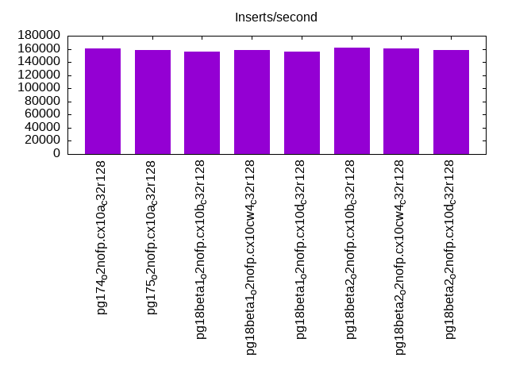
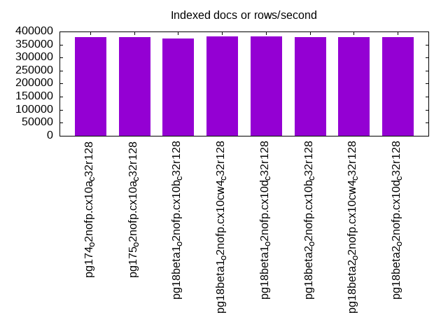
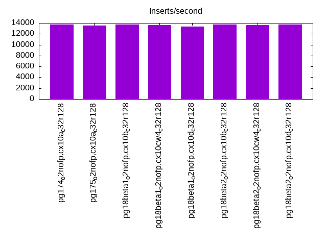
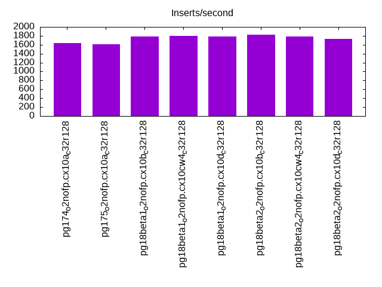
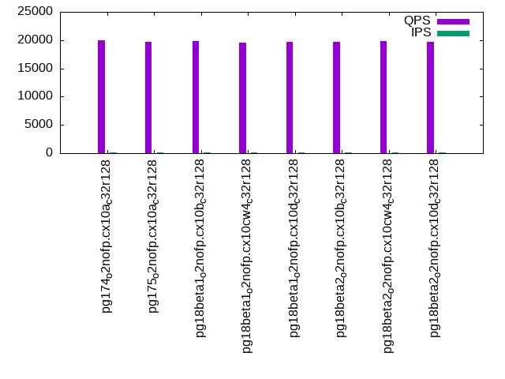
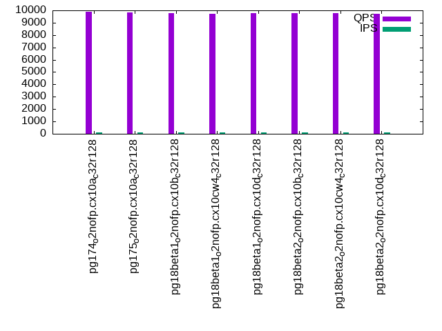
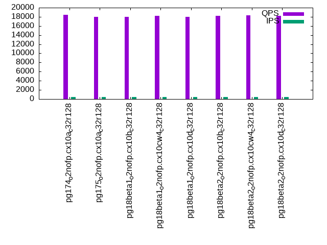
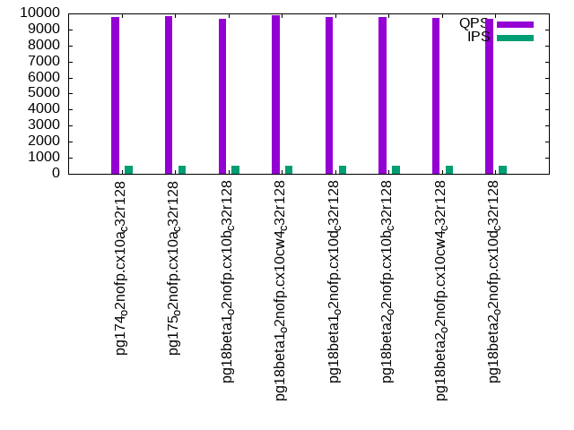
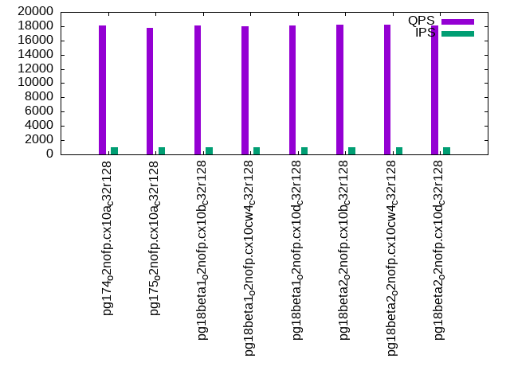
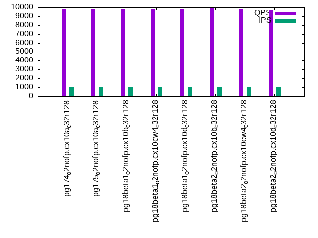

This is a report for the insert benchmark with 50M docs and 1 client(s). It is generated by scripts (bash, awk, sed) and Tufte might not be impressed. An overview of the insert benchmark is here and a short update is here. Below, by DBMS, I mean DBMS+version.config. An example is my8020.c10b40 where my means MySQL, 8020 is version 8.0.20 and c10b40 is the name for the configuration file.
The test server has 48 AMD cores, 128G RAM and RAID 10 with 2 NVMe devices. It is described here. The benchmark was run with 1 client and there were 1 or 3 connections per client (1 for queries or inserts without rate limits, 1+1 for rate limited inserts+deletes). It uses 1 table with a table per client. It loads 50M rows per table without secondary indexes, creates 3 secondary indexes per table, then inserts 160m+40m rows per table with a delete per insert to avoid growing the table. It then does 6 read+write tests for 1800s each that do queries as fast as possible with 100,100,500,500,1000,1000 inserts/s and the same for deletes/s per client concurrent with the queries. The database is cached by Postgres. Clients and the DBMS share one server. The per-database configs are in the per-database subdirectories here.
The tested DBMS are:
The numbers are inserts/s for l.i0, l.i1 and l.i2, indexed docs (or rows) /s for l.x and queries/s for qr100, qp100 thru qr1000, qp1000" The values are the average rate over the entire test for inserts (IPS) and queries (QPS). The range of values for IPS and QPS is split into 3 parts: bottom 25%, middle 50%, top 25%. Values in the bottom 25% have a red background, values in the top 25% have a green background and values in the middle have no color. A gray background is used for values that can be ignored because the DBMS did not sustain the target insert rate. Red backgrounds are not used when the minimum value is within 80% of the max value.
| dbms | l.i0 | l.x | l.i1 | l.i2 | qr100 | qp100 | qr500 | qp500 | qr1000 | qp1000 |
|---|---|---|---|---|---|---|---|---|---|---|
| pg174_o2nofp.cx10a_c32r128 | 160256 | 378789 | 13704 | 1636 | 20020 | 9862 | 18464 | 9800 | 18108 | 9762 |
| pg175_o2nofp.cx10a_c32r128 | 158228 | 378789 | 13560 | 1611 | 19666 | 9856 | 17955 | 9849 | 17744 | 9846 |
| pg18beta1_o2nofp.cx10b_c32r128 | 156250 | 373135 | 13735 | 1791 | 19772 | 9782 | 18009 | 9668 | 18064 | 9854 |
| pg18beta1_o2nofp.cx10cw4_c32r128 | 158730 | 381680 | 13619 | 1798 | 19557 | 9739 | 18168 | 9872 | 18033 | 9842 |
| pg18beta1_o2nofp.cx10d_c32r128 | 155763 | 381680 | 13336 | 1781 | 19655 | 9764 | 17943 | 9796 | 18048 | 9785 |
| pg18beta2_o2nofp.cx10b_c32r128 | 161290 | 378789 | 13752 | 1831 | 19699 | 9792 | 18204 | 9771 | 18258 | 9870 |
| pg18beta2_o2nofp.cx10cw4_c32r128 | 160772 | 378789 | 13587 | 1784 | 19852 | 9804 | 18269 | 9725 | 18163 | 9762 |
| pg18beta2_o2nofp.cx10d_c32r128 | 158730 | 378789 | 13736 | 1731 | 19751 | 9733 | 18257 | 9682 | 18132 | 9669 |
This table has relative throughput, throughput for the DBMS relative to the DBMS in the first line, using the absolute throughput from the previous table. Values less than 0.95 have a yellow background. Values greater than 1.05 have a blue background.
| dbms | l.i0 | l.x | l.i1 | l.i2 | qr100 | qp100 | qr500 | qp500 | qr1000 | qp1000 |
|---|---|---|---|---|---|---|---|---|---|---|
| pg174_o2nofp.cx10a_c32r128 | 1.00 | 1.00 | 1.00 | 1.00 | 1.00 | 1.00 | 1.00 | 1.00 | 1.00 | 1.00 |
| pg175_o2nofp.cx10a_c32r128 | 0.99 | 1.00 | 0.99 | 0.98 | 0.98 | 1.00 | 0.97 | 1.00 | 0.98 | 1.01 |
| pg18beta1_o2nofp.cx10b_c32r128 | 0.98 | 0.99 | 1.00 | 1.09 | 0.99 | 0.99 | 0.98 | 0.99 | 1.00 | 1.01 |
| pg18beta1_o2nofp.cx10cw4_c32r128 | 0.99 | 1.01 | 0.99 | 1.10 | 0.98 | 0.99 | 0.98 | 1.01 | 1.00 | 1.01 |
| pg18beta1_o2nofp.cx10d_c32r128 | 0.97 | 1.01 | 0.97 | 1.09 | 0.98 | 0.99 | 0.97 | 1.00 | 1.00 | 1.00 |
| pg18beta2_o2nofp.cx10b_c32r128 | 1.01 | 1.00 | 1.00 | 1.12 | 0.98 | 0.99 | 0.99 | 1.00 | 1.01 | 1.01 |
| pg18beta2_o2nofp.cx10cw4_c32r128 | 1.00 | 1.00 | 0.99 | 1.09 | 0.99 | 0.99 | 0.99 | 0.99 | 1.00 | 1.00 |
| pg18beta2_o2nofp.cx10d_c32r128 | 0.99 | 1.00 | 1.00 | 1.06 | 0.99 | 0.99 | 0.99 | 0.99 | 1.00 | 0.99 |
This lists the average rate of inserts/s for the tests that do inserts concurrent with queries. For such tests the query rate is listed in the table above. The read+write tests are setup so that the insert rate should match the target rate every second. Cells that are not at least 95% of the target have a red background to indicate a failure to satisfy the target.
| dbms | qr100.L1 | qp100.L2 | qr500.L3 | qp500.L4 | qr1000.L5 | qp1000.L6 |
|---|---|---|---|---|---|---|
| pg174_o2nofp.cx10a_c32r128 | 100 | 100 | 499 | 499 | 998 | 999 |
| pg175_o2nofp.cx10a_c32r128 | 100 | 100 | 499 | 499 | 999 | 999 |
| pg18beta1_o2nofp.cx10b_c32r128 | 100 | 100 | 499 | 499 | 999 | 999 |
| pg18beta1_o2nofp.cx10cw4_c32r128 | 100 | 100 | 499 | 499 | 999 | 999 |
| pg18beta1_o2nofp.cx10d_c32r128 | 100 | 100 | 499 | 499 | 998 | 999 |
| pg18beta2_o2nofp.cx10b_c32r128 | 100 | 100 | 499 | 499 | 999 | 999 |
| pg18beta2_o2nofp.cx10cw4_c32r128 | 100 | 100 | 499 | 499 | 998 | 998 |
| pg18beta2_o2nofp.cx10d_c32r128 | 100 | 100 | 499 | 499 | 998 | 999 |
| target | 100 | 100 | 500 | 500 | 1000 | 1000 |
l.i0: load without secondary indexes. Graphs for performance per 1-second interval are here.
Average throughput:
Insert response time histogram: each cell has the percentage of responses that take <= the time in the header and max is the max response time in seconds. For the max column values in the top 25% of the range have a red background and in the bottom 25% of the range have a green background. The red background is not used when the min value is within 80% of the max value.
| dbms | 256us | 1ms | 4ms | 16ms | 64ms | 256ms | 1s | 4s | 16s | gt | max |
|---|---|---|---|---|---|---|---|---|---|---|---|
| pg174_o2nofp.cx10a_c32r128 | 99.999 | nonzero | 0.001 | nonzero | 0.017 | ||||||
| pg175_o2nofp.cx10a_c32r128 | 99.999 | 0.001 | nonzero | nonzero | 0.019 | ||||||
| pg18beta1_o2nofp.cx10b_c32r128 | 99.998 | 0.001 | 0.001 | 0.008 | |||||||
| pg18beta1_o2nofp.cx10cw4_c32r128 | 99.998 | 0.001 | nonzero | nonzero | 0.022 | ||||||
| pg18beta1_o2nofp.cx10d_c32r128 | 99.998 | 0.001 | nonzero | 0.015 | |||||||
| pg18beta2_o2nofp.cx10b_c32r128 | 99.999 | 0.001 | 0.001 | 0.008 | |||||||
| pg18beta2_o2nofp.cx10cw4_c32r128 | 99.999 | nonzero | 0.001 | nonzero | 0.016 | ||||||
| pg18beta2_o2nofp.cx10d_c32r128 | 99.999 | 0.001 | 0.001 | 0.014 |
Performance metrics for the DBMS listed above. Some are normalized by throughput, others are not. Legend for results is here.
ips qps rps rmbps wps wmbps rpq rkbpq wpi wkbpi csps cpups cspq cpupq dbgb1 dbgb2 rss maxop p50 p99 tag 160256 0 0 0.0 619.8 68.0 0.000 0.000 0.004 0.434 17353 3.5 0.108 10 4.8 13.0 0.5 0.017 161115 158422 pg174_o2nofp.cx10a_c32r128 158228 0 0 0.0 622.8 68.4 0.000 0.000 0.004 0.443 16911 3.9 0.107 12 4.8 13.0 0.5 0.019 159909 156878 pg175_o2nofp.cx10a_c32r128 156250 0 0 0.0 595.9 66.3 0.000 0.000 0.004 0.434 16624 3.2 0.106 10 4.8 13.0 4.7 0.008 156322 155027 pg18beta1_o2nofp.cx10b_c32r128 158730 0 0 0.0 606.2 67.6 0.000 0.000 0.004 0.436 17148 3.3 0.108 10 4.8 13.0 0.5 0.022 159515 156318 pg18beta1_o2nofp.cx10cw4_c32r128 155763 0 0 0.0 605.0 67.3 0.000 0.000 0.004 0.442 16547 3.1 0.106 10 4.8 13.0 0.5 0.015 156122 154919 pg18beta1_o2nofp.cx10d_c32r128 161290 0 0 0.0 614.1 68.5 0.000 0.000 0.004 0.435 17352 3.5 0.108 10 4.8 13.0 4.8 0.008 161512 160615 pg18beta2_o2nofp.cx10b_c32r128 160772 0 0 0.0 617.4 68.4 0.000 0.000 0.004 0.436 17320 3.4 0.108 10 4.8 13.0 0.5 0.016 161510 160412 pg18beta2_o2nofp.cx10cw4_c32r128 158730 0 0 0.0 607.8 67.6 0.000 0.000 0.004 0.436 17080 3.4 0.108 10 4.8 13.0 0.5 0.014 158920 157616 pg18beta2_o2nofp.cx10d_c32r128
l.x: create secondary indexes.
Average throughput:
Performance metrics for the DBMS listed above. Some are normalized by throughput, others are not. Legend for results is here.
ips qps rps rmbps wps wmbps rpq rkbpq wpi wkbpi csps cpups cspq cpupq dbgb1 dbgb2 rss maxop p50 p99 tag 378789 0 0 0.0 957.9 113.9 0.000 0.000 0.003 0.308 1884 2.5 0.005 3 9.6 22.2 5.1 0.002 NA NA pg174_o2nofp.cx10a_c32r128 378789 0 0 0.0 947.2 112.4 0.000 0.000 0.003 0.304 1875 2.5 0.005 3 9.6 22.1 5.1 0.002 NA NA pg175_o2nofp.cx10a_c32r128 373135 0 0 0.0 914.4 109.9 0.000 0.000 0.002 0.302 1714 2.4 0.005 3 9.6 22.2 5.1 0.002 NA NA pg18beta1_o2nofp.cx10b_c32r128 381680 0 6 0.0 1057.5 115.5 0.000 0.000 0.003 0.310 2287 2.6 0.006 3 9.6 22.2 5.1 0.002 NA NA pg18beta1_o2nofp.cx10cw4_c32r128 381680 0 0 0.0 953.6 114.3 0.000 0.000 0.002 0.307 1914 2.3 0.005 3 9.6 22.1 5.1 0.002 NA NA pg18beta1_o2nofp.cx10d_c32r128 378789 0 0 0.0 963.0 115.5 0.000 0.000 0.003 0.312 1854 2.4 0.005 3 9.6 22.2 5.1 0.002 NA NA pg18beta2_o2nofp.cx10b_c32r128 378789 0 0 0.0 970.1 115.8 0.000 0.000 0.003 0.313 1906 2.4 0.005 3 9.6 22.2 5.1 0.002 NA NA pg18beta2_o2nofp.cx10cw4_c32r128 378789 0 0 0.0 949.0 113.6 0.000 0.000 0.003 0.307 1873 2.4 0.005 3 9.6 22.2 5.1 0.002 NA NA pg18beta2_o2nofp.cx10d_c32r128
l.i1: continue load after secondary indexes created with 50 inserts per transaction. Graphs for performance per 1-second interval are here.
Average throughput:
Insert response time histogram: each cell has the percentage of responses that take <= the time in the header and max is the max response time in seconds. For the max column values in the top 25% of the range have a red background and in the bottom 25% of the range have a green background. The red background is not used when the min value is within 80% of the max value.
| dbms | 256us | 1ms | 4ms | 16ms | 64ms | 256ms | 1s | 4s | 16s | gt | max |
|---|---|---|---|---|---|---|---|---|---|---|---|
| pg174_o2nofp.cx10a_c32r128 | 34.470 | 65.529 | 0.001 | nonzero | 0.083 | ||||||
| pg175_o2nofp.cx10a_c32r128 | 34.471 | 65.528 | 0.001 | nonzero | 0.023 | ||||||
| pg18beta1_o2nofp.cx10b_c32r128 | 29.032 | 70.968 | 0.001 | nonzero | nonzero | 0.082 | |||||
| pg18beta1_o2nofp.cx10cw4_c32r128 | 32.016 | 67.983 | 0.001 | nonzero | 0.085 | ||||||
| pg18beta1_o2nofp.cx10d_c32r128 | 33.942 | 66.057 | 0.001 | nonzero | 0.093 | ||||||
| pg18beta2_o2nofp.cx10b_c32r128 | 36.586 | 63.413 | 0.001 | 0.015 | |||||||
| pg18beta2_o2nofp.cx10cw4_c32r128 | 36.697 | 63.302 | 0.001 | nonzero | 0.089 | ||||||
| pg18beta2_o2nofp.cx10d_c32r128 | 36.017 | 63.982 | 0.001 | 0.015 |
Delete response time histogram: each cell has the percentage of responses that take <= the time in the header and max is the max response time in seconds. For the max column values in the top 25% of the range have a red background and in the bottom 25% of the range have a green background. The red background is not used when the min value is within 80% of the max value.
| dbms | 256us | 1ms | 4ms | 16ms | 64ms | 256ms | 1s | 4s | 16s | gt | max |
|---|---|---|---|---|---|---|---|---|---|---|---|
| pg174_o2nofp.cx10a_c32r128 | 11.980 | 39.286 | 48.734 | nonzero | nonzero | 0.084 | |||||
| pg175_o2nofp.cx10a_c32r128 | 12.036 | 39.610 | 48.354 | nonzero | 0.024 | ||||||
| pg18beta1_o2nofp.cx10b_c32r128 | 11.511 | 40.447 | 48.042 | nonzero | nonzero | 0.084 | |||||
| pg18beta1_o2nofp.cx10cw4_c32r128 | 11.659 | 40.027 | 48.314 | nonzero | nonzero | 0.086 | |||||
| pg18beta1_o2nofp.cx10d_c32r128 | 11.284 | 44.811 | 43.905 | nonzero | nonzero | 0.094 | |||||
| pg18beta2_o2nofp.cx10b_c32r128 | 11.949 | 38.323 | 49.728 | nonzero | 0.021 | ||||||
| pg18beta2_o2nofp.cx10cw4_c32r128 | 11.883 | 44.497 | 43.620 | nonzero | 0.091 | ||||||
| pg18beta2_o2nofp.cx10d_c32r128 | 11.979 | 38.383 | 49.638 | nonzero | 0.021 |
Performance metrics for the DBMS listed above. Some are normalized by throughput, others are not. Legend for results is here.
ips qps rps rmbps wps wmbps rpq rkbpq wpi wkbpi csps cpups cspq cpupq dbgb1 dbgb2 rss maxop p50 p99 tag 13704 0 0 0.0 182.7 17.3 0.000 0.000 0.013 1.290 6249 3.0 0.456 105 13.6 51.1 1.1 0.083 10138 6093 pg174_o2nofp.cx10a_c32r128 13560 0 0 0.0 182.6 17.1 0.000 0.000 0.013 1.292 6209 3.0 0.458 106 13.6 50.8 12.3 0.023 9989 5544 pg175_o2nofp.cx10a_c32r128 13735 0 0 0.0 177.4 17.3 0.000 0.000 0.013 1.292 6234 3.0 0.454 105 13.6 51.6 13.2 0.082 10788 7342 pg18beta1_o2nofp.cx10b_c32r128 13619 0 1 0.0 177.3 17.2 0.000 0.001 0.013 1.294 6207 3.0 0.456 106 13.6 51.0 1.7 0.085 10388 6043 pg18beta1_o2nofp.cx10cw4_c32r128 13336 0 0 0.0 174.5 16.8 0.000 0.000 0.013 1.288 6065 2.9 0.455 104 13.6 50.0 13.7 0.093 10240 4095 pg18beta1_o2nofp.cx10d_c32r128 13752 0 0 0.0 175.0 17.3 0.000 0.000 0.013 1.291 6229 3.0 0.453 105 13.6 51.9 1.5 0.015 9889 6842 pg18beta2_o2nofp.cx10b_c32r128 13587 0 0 0.0 173.9 17.0 0.000 0.000 0.013 1.283 6171 2.9 0.454 102 13.6 50.3 1.4 0.089 10288 4295 pg18beta2_o2nofp.cx10cw4_c32r128 13736 0 0 0.0 176.5 17.4 0.000 0.000 0.013 1.296 6240 3.0 0.454 105 13.6 51.9 1.7 0.015 9939 6093 pg18beta2_o2nofp.cx10d_c32r128
l.i2: continue load after secondary indexes created with 5 inserts per transaction. Graphs for performance per 1-second interval are here.
Average throughput:
Insert response time histogram: each cell has the percentage of responses that take <= the time in the header and max is the max response time in seconds. For the max column values in the top 25% of the range have a red background and in the bottom 25% of the range have a green background. The red background is not used when the min value is within 80% of the max value.
| dbms | 256us | 1ms | 4ms | 16ms | 64ms | 256ms | 1s | 4s | 16s | gt | max |
|---|---|---|---|---|---|---|---|---|---|---|---|
| pg174_o2nofp.cx10a_c32r128 | 32.101 | 67.899 | nonzero | nonzero | 0.081 | ||||||
| pg175_o2nofp.cx10a_c32r128 | 30.741 | 69.259 | nonzero | nonzero | 0.087 | ||||||
| pg18beta1_o2nofp.cx10b_c32r128 | 40.482 | 59.518 | nonzero | nonzero | 0.088 | ||||||
| pg18beta1_o2nofp.cx10cw4_c32r128 | 42.450 | 57.550 | nonzero | 0.002 | |||||||
| pg18beta1_o2nofp.cx10d_c32r128 | 39.608 | 60.391 | nonzero | nonzero | 0.099 | ||||||
| pg18beta2_o2nofp.cx10b_c32r128 | 44.402 | 55.598 | nonzero | nonzero | 0.096 | ||||||
| pg18beta2_o2nofp.cx10cw4_c32r128 | 42.550 | 57.450 | nonzero | nonzero | 0.101 | ||||||
| pg18beta2_o2nofp.cx10d_c32r128 | 40.420 | 59.580 | nonzero | nonzero | 0.100 |
Delete response time histogram: each cell has the percentage of responses that take <= the time in the header and max is the max response time in seconds. For the max column values in the top 25% of the range have a red background and in the bottom 25% of the range have a green background. The red background is not used when the min value is within 80% of the max value.
| dbms | 256us | 1ms | 4ms | 16ms | 64ms | 256ms | 1s | 4s | 16s | gt | max |
|---|---|---|---|---|---|---|---|---|---|---|---|
| pg174_o2nofp.cx10a_c32r128 | 0.972 | 9.473 | 61.597 | 27.958 | nonzero | nonzero | 0.081 | ||||
| pg175_o2nofp.cx10a_c32r128 | 0.882 | 10.625 | 59.694 | 28.799 | nonzero | nonzero | 0.088 | ||||
| pg18beta1_o2nofp.cx10b_c32r128 | 0.788 | 17.876 | 58.204 | 23.131 | nonzero | nonzero | 0.089 | ||||
| pg18beta1_o2nofp.cx10cw4_c32r128 | 0.762 | 18.182 | 58.252 | 22.803 | nonzero | 0.029 | |||||
| pg18beta1_o2nofp.cx10d_c32r128 | 0.725 | 17.746 | 59.467 | 22.062 | nonzero | 0.100 | |||||
| pg18beta2_o2nofp.cx10b_c32r128 | 0.826 | 18.386 | 58.807 | 21.982 | nonzero | nonzero | 0.096 | ||||
| pg18beta2_o2nofp.cx10cw4_c32r128 | 0.806 | 17.837 | 58.926 | 22.431 | nonzero | nonzero | 0.102 | ||||
| pg18beta2_o2nofp.cx10d_c32r128 | 0.797 | 17.722 | 54.007 | 27.474 | nonzero | nonzero | 0.101 |
Performance metrics for the DBMS listed above. Some are normalized by throughput, others are not. Legend for results is here.
ips qps rps rmbps wps wmbps rpq rkbpq wpi wkbpi csps cpups cspq cpupq dbgb1 dbgb2 rss maxop p50 p99 tag 1636 0 0 0.0 93.1 6.1 0.000 0.000 0.057 3.818 7189 1.9 4.395 558 13.7 51.2 11.4 0.081 1294 809 pg174_o2nofp.cx10a_c32r128 1611 0 0 0.0 90.7 6.1 0.000 0.000 0.056 3.849 7090 1.9 4.400 566 13.7 50.9 2.1 0.087 1283 789 pg175_o2nofp.cx10a_c32r128 1791 0 0 0.0 86.1 6.1 0.000 0.000 0.048 3.508 7745 2.0 4.325 536 13.6 51.6 11.5 0.088 1328 584 pg18beta1_o2nofp.cx10b_c32r128 1798 0 0 0.0 87.3 6.2 0.000 0.000 0.049 3.543 7801 2.0 4.337 534 13.7 51.1 11.3 0.002 1333 579 pg18beta1_o2nofp.cx10cw4_c32r128 1781 0 0 0.0 83.6 6.2 0.000 0.000 0.047 3.583 7719 2.0 4.334 539 13.7 50.1 13.6 0.099 1348 574 pg18beta1_o2nofp.cx10d_c32r128 1831 0 0 0.0 86.0 6.2 0.000 0.000 0.047 3.467 7949 2.0 4.341 524 13.6 52.0 13.8 0.096 1343 579 pg18beta2_o2nofp.cx10b_c32r128 1784 0 0 0.0 86.2 6.2 0.000 0.000 0.048 3.555 7744 2.0 4.342 538 13.6 50.4 13.5 0.101 1334 554 pg18beta2_o2nofp.cx10cw4_c32r128 1731 0 0 0.0 86.9 6.1 0.000 0.000 0.050 3.596 7518 2.0 4.343 555 13.6 52.0 6.2 0.100 1249 599 pg18beta2_o2nofp.cx10d_c32r128
qr100.L1: range queries with 100 insert/s per client. Graphs for performance per 1-second interval are here.
Average throughput:
Query response time histogram: each cell has the percentage of responses that take <= the time in the header and max is the max response time in seconds. For max values in the top 25% of the range have a red background and in the bottom 25% of the range have a green background. The red background is not used when the min value is within 80% of the max value.
| dbms | 256us | 1ms | 4ms | 16ms | 64ms | 256ms | 1s | 4s | 16s | gt | max |
|---|---|---|---|---|---|---|---|---|---|---|---|
| pg174_o2nofp.cx10a_c32r128 | 100.000 | nonzero | nonzero | 0.001 | |||||||
| pg175_o2nofp.cx10a_c32r128 | 100.000 | nonzero | nonzero | 0.001 | |||||||
| pg18beta1_o2nofp.cx10b_c32r128 | 100.000 | nonzero | nonzero | 0.002 | |||||||
| pg18beta1_o2nofp.cx10cw4_c32r128 | 100.000 | nonzero | nonzero | nonzero | 0.004 | ||||||
| pg18beta1_o2nofp.cx10d_c32r128 | 100.000 | nonzero | nonzero | 0.001 | |||||||
| pg18beta2_o2nofp.cx10b_c32r128 | 100.000 | nonzero | nonzero | 0.001 | |||||||
| pg18beta2_o2nofp.cx10cw4_c32r128 | 100.000 | nonzero | nonzero | 0.001 | |||||||
| pg18beta2_o2nofp.cx10d_c32r128 | 100.000 | nonzero | nonzero | 0.001 |
Insert response time histogram: each cell has the percentage of responses that take <= the time in the header and max is the max response time in seconds. For max values in the top 25% of the range have a red background and in the bottom 25% of the range have a green background. The red background is not used when the min value is within 80% of the max value.
| dbms | 256us | 1ms | 4ms | 16ms | 64ms | 256ms | 1s | 4s | 16s | gt | max |
|---|---|---|---|---|---|---|---|---|---|---|---|
| pg174_o2nofp.cx10a_c32r128 | 99.861 | 0.139 | 0.008 | ||||||||
| pg175_o2nofp.cx10a_c32r128 | 99.861 | 0.139 | 0.008 | ||||||||
| pg18beta1_o2nofp.cx10b_c32r128 | 99.861 | 0.139 | 0.008 | ||||||||
| pg18beta1_o2nofp.cx10cw4_c32r128 | 99.861 | 0.139 | 0.008 | ||||||||
| pg18beta1_o2nofp.cx10d_c32r128 | 99.861 | 0.139 | 0.008 | ||||||||
| pg18beta2_o2nofp.cx10b_c32r128 | 99.833 | 0.167 | 0.008 | ||||||||
| pg18beta2_o2nofp.cx10cw4_c32r128 | 99.861 | 0.139 | 0.008 | ||||||||
| pg18beta2_o2nofp.cx10d_c32r128 | 99.861 | 0.139 | 0.009 |
Delete response time histogram: each cell has the percentage of responses that take <= the time in the header and max is the max response time in seconds. For max values in the top 25% of the range have a red background and in the bottom 25% of the range have a green background. The red background is not used when the min value is within 80% of the max value.
| dbms | 256us | 1ms | 4ms | 16ms | 64ms | 256ms | 1s | 4s | 16s | gt | max |
|---|---|---|---|---|---|---|---|---|---|---|---|
| pg174_o2nofp.cx10a_c32r128 | 58.556 | 41.444 | 0.002 | ||||||||
| pg175_o2nofp.cx10a_c32r128 | 54.861 | 45.139 | 0.002 | ||||||||
| pg18beta1_o2nofp.cx10b_c32r128 | 54.583 | 45.417 | 0.003 | ||||||||
| pg18beta1_o2nofp.cx10cw4_c32r128 | 51.889 | 48.111 | 0.003 | ||||||||
| pg18beta1_o2nofp.cx10d_c32r128 | 54.917 | 45.083 | 0.003 | ||||||||
| pg18beta2_o2nofp.cx10b_c32r128 | 56.361 | 43.639 | 0.003 | ||||||||
| pg18beta2_o2nofp.cx10cw4_c32r128 | 56.944 | 43.056 | 0.003 | ||||||||
| pg18beta2_o2nofp.cx10d_c32r128 | 56.611 | 43.389 | 0.003 |
Performance metrics for the DBMS listed above. Some are normalized by throughput, others are not. Legend for results is here.
ips qps rps rmbps wps wmbps rpq rkbpq wpi wkbpi csps cpups cspq cpupq dbgb1 dbgb2 rss maxop p50 p99 tag 100 20020 0 0.0 24.1 0.9 0.000 0.000 0.241 8.986 76594 1.9 3.826 46 13.7 51.2 0.2 0.001 20040 19754 pg174_o2nofp.cx10a_c32r128 100 19666 0 0.0 15.9 0.8 0.000 0.000 0.159 8.670 75195 1.9 3.824 46 13.7 50.9 0.2 0.001 19657 19417 pg175_o2nofp.cx10a_c32r128 100 19772 0 0.0 14.2 0.8 0.000 0.000 0.142 8.612 75639 1.9 3.826 46 13.6 51.6 0.2 0.002 19769 19498 pg18beta1_o2nofp.cx10b_c32r128 100 19557 0 0.0 19.5 0.9 0.000 0.000 0.195 8.835 74797 1.9 3.825 47 13.7 51.1 0.2 0.004 19546 19242 pg18beta1_o2nofp.cx10cw4_c32r128 100 19655 0 0.0 15.3 0.8 0.000 0.000 0.154 8.676 75156 1.9 3.824 46 13.7 50.1 0.2 0.001 19642 19370 pg18beta1_o2nofp.cx10d_c32r128 100 19699 0 0.0 19.3 0.9 0.000 0.000 0.194 8.873 75339 1.9 3.825 46 13.6 52.0 0.2 0.001 19674 19434 pg18beta2_o2nofp.cx10b_c32r128 100 19852 0 0.0 17.6 0.9 0.000 0.000 0.176 8.758 75917 1.9 3.824 46 13.6 50.4 0.2 0.001 19848 19594 pg18beta2_o2nofp.cx10cw4_c32r128 100 19751 0 0.0 14.9 0.8 0.000 0.000 0.150 8.666 75518 1.9 3.824 46 13.6 52.0 0.2 0.001 19754 19465 pg18beta2_o2nofp.cx10d_c32r128
qp100.L2: point queries with 100 insert/s per client. Graphs for performance per 1-second interval are here.
Average throughput:
Query response time histogram: each cell has the percentage of responses that take <= the time in the header and max is the max response time in seconds. For max values in the top 25% of the range have a red background and in the bottom 25% of the range have a green background. The red background is not used when the min value is within 80% of the max value.
| dbms | 256us | 1ms | 4ms | 16ms | 64ms | 256ms | 1s | 4s | 16s | gt | max |
|---|---|---|---|---|---|---|---|---|---|---|---|
| pg174_o2nofp.cx10a_c32r128 | 99.999 | 0.001 | 0.001 | ||||||||
| pg175_o2nofp.cx10a_c32r128 | 99.999 | 0.001 | 0.001 | ||||||||
| pg18beta1_o2nofp.cx10b_c32r128 | 99.999 | 0.001 | 0.001 | ||||||||
| pg18beta1_o2nofp.cx10cw4_c32r128 | 99.999 | 0.001 | 0.001 | ||||||||
| pg18beta1_o2nofp.cx10d_c32r128 | 99.999 | 0.001 | 0.001 | ||||||||
| pg18beta2_o2nofp.cx10b_c32r128 | 99.999 | 0.001 | nonzero | 0.004 | |||||||
| pg18beta2_o2nofp.cx10cw4_c32r128 | 99.999 | 0.001 | 0.001 | ||||||||
| pg18beta2_o2nofp.cx10d_c32r128 | 99.999 | 0.001 | 0.001 |
Insert response time histogram: each cell has the percentage of responses that take <= the time in the header and max is the max response time in seconds. For max values in the top 25% of the range have a red background and in the bottom 25% of the range have a green background. The red background is not used when the min value is within 80% of the max value.
| dbms | 256us | 1ms | 4ms | 16ms | 64ms | 256ms | 1s | 4s | 16s | gt | max |
|---|---|---|---|---|---|---|---|---|---|---|---|
| pg174_o2nofp.cx10a_c32r128 | 99.889 | 0.111 | 0.008 | ||||||||
| pg175_o2nofp.cx10a_c32r128 | 99.889 | 0.111 | 0.008 | ||||||||
| pg18beta1_o2nofp.cx10b_c32r128 | 99.889 | 0.111 | 0.008 | ||||||||
| pg18beta1_o2nofp.cx10cw4_c32r128 | 99.889 | 0.111 | 0.008 | ||||||||
| pg18beta1_o2nofp.cx10d_c32r128 | 99.889 | 0.111 | 0.008 | ||||||||
| pg18beta2_o2nofp.cx10b_c32r128 | 99.861 | 0.139 | 0.009 | ||||||||
| pg18beta2_o2nofp.cx10cw4_c32r128 | 99.889 | 0.111 | 0.008 | ||||||||
| pg18beta2_o2nofp.cx10d_c32r128 | 99.889 | 0.111 | 0.008 |
Delete response time histogram: each cell has the percentage of responses that take <= the time in the header and max is the max response time in seconds. For max values in the top 25% of the range have a red background and in the bottom 25% of the range have a green background. The red background is not used when the min value is within 80% of the max value.
| dbms | 256us | 1ms | 4ms | 16ms | 64ms | 256ms | 1s | 4s | 16s | gt | max |
|---|---|---|---|---|---|---|---|---|---|---|---|
| pg174_o2nofp.cx10a_c32r128 | 99.972 | 0.028 | 0.006 | ||||||||
| pg175_o2nofp.cx10a_c32r128 | 99.972 | 0.028 | 0.007 | ||||||||
| pg18beta1_o2nofp.cx10b_c32r128 | 99.972 | 0.028 | 0.007 | ||||||||
| pg18beta1_o2nofp.cx10cw4_c32r128 | 99.972 | 0.028 | 0.007 | ||||||||
| pg18beta1_o2nofp.cx10d_c32r128 | 99.972 | 0.028 | 0.007 | ||||||||
| pg18beta2_o2nofp.cx10b_c32r128 | 99.972 | 0.028 | 0.007 | ||||||||
| pg18beta2_o2nofp.cx10cw4_c32r128 | 99.972 | 0.028 | 0.007 | ||||||||
| pg18beta2_o2nofp.cx10d_c32r128 | 99.972 | 0.028 | 0.007 |
Performance metrics for the DBMS listed above. Some are normalized by throughput, others are not. Legend for results is here.
ips qps rps rmbps wps wmbps rpq rkbpq wpi wkbpi csps cpups cspq cpupq dbgb1 dbgb2 rss maxop p50 p99 tag 100 9862 0 0.0 113.1 2.0 0.000 0.000 1.133 20.185 38258 2.5 3.879 122 13.7 51.2 0.2 0.001 9876 9765 pg174_o2nofp.cx10a_c32r128 100 9856 0 0.0 106.1 1.9 0.000 0.000 1.063 19.884 38188 2.3 3.875 112 13.7 50.9 0.2 0.001 9860 9797 pg175_o2nofp.cx10a_c32r128 100 9782 0 0.0 105.9 1.9 0.000 0.000 1.062 19.913 37901 2.4 3.875 118 13.6 51.6 0.2 0.001 9797 9669 pg18beta1_o2nofp.cx10b_c32r128 100 9739 0 0.0 104.3 1.9 0.000 0.000 1.045 19.838 37732 2.2 3.874 108 13.7 51.1 0.2 0.001 9749 9669 pg18beta1_o2nofp.cx10cw4_c32r128 100 9764 0 0.0 107.2 1.9 0.000 0.000 1.074 19.941 37843 2.3 3.876 113 13.7 50.1 0.2 0.001 9765 9685 pg18beta1_o2nofp.cx10d_c32r128 100 9792 0 0.0 103.4 1.9 0.000 0.000 1.036 19.816 37932 2.4 3.874 118 13.6 52.0 0.2 0.004 9797 9717 pg18beta2_o2nofp.cx10b_c32r128 100 9804 0 0.0 106.7 1.9 0.000 0.000 1.069 19.914 37993 2.5 3.875 122 13.6 50.4 0.2 0.001 9797 9732 pg18beta2_o2nofp.cx10cw4_c32r128 100 9733 0 0.0 106.3 1.9 0.000 0.000 1.065 19.933 37730 2.3 3.876 113 13.6 52.0 0.2 0.001 9749 9621 pg18beta2_o2nofp.cx10d_c32r128
qr500.L3: range queries with 500 insert/s per client. Graphs for performance per 1-second interval are here.
Average throughput:
Query response time histogram: each cell has the percentage of responses that take <= the time in the header and max is the max response time in seconds. For max values in the top 25% of the range have a red background and in the bottom 25% of the range have a green background. The red background is not used when the min value is within 80% of the max value.
| dbms | 256us | 1ms | 4ms | 16ms | 64ms | 256ms | 1s | 4s | 16s | gt | max |
|---|---|---|---|---|---|---|---|---|---|---|---|
| pg174_o2nofp.cx10a_c32r128 | 100.000 | nonzero | nonzero | 0.003 | |||||||
| pg175_o2nofp.cx10a_c32r128 | 100.000 | nonzero | nonzero | 0.003 | |||||||
| pg18beta1_o2nofp.cx10b_c32r128 | 99.999 | 0.001 | nonzero | nonzero | 0.004 | ||||||
| pg18beta1_o2nofp.cx10cw4_c32r128 | 100.000 | nonzero | nonzero | 0.003 | |||||||
| pg18beta1_o2nofp.cx10d_c32r128 | 100.000 | nonzero | nonzero | 0.004 | |||||||
| pg18beta2_o2nofp.cx10b_c32r128 | 100.000 | nonzero | nonzero | nonzero | 0.004 | ||||||
| pg18beta2_o2nofp.cx10cw4_c32r128 | 100.000 | nonzero | nonzero | 0.003 | |||||||
| pg18beta2_o2nofp.cx10d_c32r128 | 100.000 | nonzero | nonzero | 0.004 |
Insert response time histogram: each cell has the percentage of responses that take <= the time in the header and max is the max response time in seconds. For max values in the top 25% of the range have a red background and in the bottom 25% of the range have a green background. The red background is not used when the min value is within 80% of the max value.
| dbms | 256us | 1ms | 4ms | 16ms | 64ms | 256ms | 1s | 4s | 16s | gt | max |
|---|---|---|---|---|---|---|---|---|---|---|---|
| pg174_o2nofp.cx10a_c32r128 | 7.956 | 92.028 | 0.017 | 0.008 | |||||||
| pg175_o2nofp.cx10a_c32r128 | 8.317 | 91.661 | 0.022 | 0.008 | |||||||
| pg18beta1_o2nofp.cx10b_c32r128 | 7.567 | 92.411 | 0.022 | 0.008 | |||||||
| pg18beta1_o2nofp.cx10cw4_c32r128 | 9.389 | 90.589 | 0.022 | 0.008 | |||||||
| pg18beta1_o2nofp.cx10d_c32r128 | 8.094 | 91.883 | 0.022 | 0.008 | |||||||
| pg18beta2_o2nofp.cx10b_c32r128 | 14.500 | 85.483 | 0.017 | 0.008 | |||||||
| pg18beta2_o2nofp.cx10cw4_c32r128 | 11.839 | 88.139 | 0.022 | 0.008 | |||||||
| pg18beta2_o2nofp.cx10d_c32r128 | 6.556 | 93.422 | 0.022 | 0.008 |
Delete response time histogram: each cell has the percentage of responses that take <= the time in the header and max is the max response time in seconds. For max values in the top 25% of the range have a red background and in the bottom 25% of the range have a green background. The red background is not used when the min value is within 80% of the max value.
| dbms | 256us | 1ms | 4ms | 16ms | 64ms | 256ms | 1s | 4s | 16s | gt | max |
|---|---|---|---|---|---|---|---|---|---|---|---|
| pg174_o2nofp.cx10a_c32r128 | 94.539 | 5.461 | 0.010 | ||||||||
| pg175_o2nofp.cx10a_c32r128 | 94.911 | 5.089 | 0.011 | ||||||||
| pg18beta1_o2nofp.cx10b_c32r128 | 94.706 | 5.294 | 0.011 | ||||||||
| pg18beta1_o2nofp.cx10cw4_c32r128 | 94.278 | 5.722 | 0.011 | ||||||||
| pg18beta1_o2nofp.cx10d_c32r128 | 94.467 | 5.533 | 0.011 | ||||||||
| pg18beta2_o2nofp.cx10b_c32r128 | 95.378 | 4.622 | 0.011 | ||||||||
| pg18beta2_o2nofp.cx10cw4_c32r128 | 95.439 | 4.561 | 0.011 | ||||||||
| pg18beta2_o2nofp.cx10d_c32r128 | 95.550 | 4.450 | 0.011 |
Performance metrics for the DBMS listed above. Some are normalized by throughput, others are not. Legend for results is here.
ips qps rps rmbps wps wmbps rpq rkbpq wpi wkbpi csps cpups cspq cpupq dbgb1 dbgb2 rss maxop p50 p99 tag 499 18464 0 0.0 117.5 3.1 0.000 0.000 0.235 6.348 70773 2.1 3.833 55 13.7 51.2 0.5 0.003 18443 17632 pg174_o2nofp.cx10a_c32r128 499 17955 0 0.0 112.6 3.1 0.000 0.000 0.226 6.344 68844 2.1 3.834 56 13.7 50.9 0.5 0.003 17963 17116 pg175_o2nofp.cx10a_c32r128 499 18009 0 0.0 109.4 3.1 0.000 0.000 0.219 6.281 69001 2.1 3.831 56 13.6 51.6 0.5 0.004 17995 17052 pg18beta1_o2nofp.cx10b_c32r128 499 18168 0 0.0 110.8 3.1 0.000 0.000 0.222 6.297 69614 2.2 3.832 58 13.7 51.1 0.5 0.003 18123 17244 pg18beta1_o2nofp.cx10cw4_c32r128 499 17943 0 0.0 111.5 3.1 0.000 0.000 0.223 6.305 68757 2.2 3.832 59 13.7 50.1 0.5 0.004 17931 17036 pg18beta1_o2nofp.cx10d_c32r128 499 18204 0 0.0 108.4 3.1 0.000 0.000 0.217 6.309 69745 2.1 3.831 55 13.6 52.0 0.5 0.004 18219 17292 pg18beta2_o2nofp.cx10b_c32r128 499 18269 0 0.0 109.9 3.1 0.000 0.000 0.220 6.298 69995 2.1 3.831 55 13.6 50.4 0.5 0.003 18267 17404 pg18beta2_o2nofp.cx10cw4_c32r128 499 18257 0 0.0 109.0 3.1 0.000 0.000 0.218 6.295 69949 2.1 3.831 55 13.6 52.0 0.5 0.004 18283 17419 pg18beta2_o2nofp.cx10d_c32r128
qp500.L4: point queries with 500 insert/s per client. Graphs for performance per 1-second interval are here.
Average throughput:
Query response time histogram: each cell has the percentage of responses that take <= the time in the header and max is the max response time in seconds. For max values in the top 25% of the range have a red background and in the bottom 25% of the range have a green background. The red background is not used when the min value is within 80% of the max value.
| dbms | 256us | 1ms | 4ms | 16ms | 64ms | 256ms | 1s | 4s | 16s | gt | max |
|---|---|---|---|---|---|---|---|---|---|---|---|
| pg174_o2nofp.cx10a_c32r128 | 100.000 | nonzero | 0.001 | ||||||||
| pg175_o2nofp.cx10a_c32r128 | 99.999 | 0.001 | nonzero | 0.001 | |||||||
| pg18beta1_o2nofp.cx10b_c32r128 | 99.999 | 0.001 | 0.001 | ||||||||
| pg18beta1_o2nofp.cx10cw4_c32r128 | 99.999 | 0.001 | 0.001 | ||||||||
| pg18beta1_o2nofp.cx10d_c32r128 | 99.999 | 0.001 | 0.001 | ||||||||
| pg18beta2_o2nofp.cx10b_c32r128 | 99.999 | 0.001 | 0.001 | ||||||||
| pg18beta2_o2nofp.cx10cw4_c32r128 | 99.999 | 0.001 | nonzero | 0.001 | |||||||
| pg18beta2_o2nofp.cx10d_c32r128 | 99.999 | 0.001 | nonzero | nonzero | 0.005 |
Insert response time histogram: each cell has the percentage of responses that take <= the time in the header and max is the max response time in seconds. For max values in the top 25% of the range have a red background and in the bottom 25% of the range have a green background. The red background is not used when the min value is within 80% of the max value.
| dbms | 256us | 1ms | 4ms | 16ms | 64ms | 256ms | 1s | 4s | 16s | gt | max |
|---|---|---|---|---|---|---|---|---|---|---|---|
| pg174_o2nofp.cx10a_c32r128 | 12.006 | 87.972 | 0.022 | 0.008 | |||||||
| pg175_o2nofp.cx10a_c32r128 | 7.761 | 92.222 | 0.017 | 0.008 | |||||||
| pg18beta1_o2nofp.cx10b_c32r128 | 18.172 | 81.778 | 0.050 | 0.014 | |||||||
| pg18beta1_o2nofp.cx10cw4_c32r128 | 17.972 | 81.967 | 0.056 | 0.006 | 0.023 | ||||||
| pg18beta1_o2nofp.cx10d_c32r128 | 15.639 | 84.317 | 0.044 | 0.014 | |||||||
| pg18beta2_o2nofp.cx10b_c32r128 | 23.278 | 76.672 | 0.039 | 0.011 | 0.023 | ||||||
| pg18beta2_o2nofp.cx10cw4_c32r128 | 24.578 | 75.378 | 0.044 | 0.015 | |||||||
| pg18beta2_o2nofp.cx10d_c32r128 | 15.750 | 84.200 | 0.044 | 0.006 | 0.016 |
Delete response time histogram: each cell has the percentage of responses that take <= the time in the header and max is the max response time in seconds. For max values in the top 25% of the range have a red background and in the bottom 25% of the range have a green background. The red background is not used when the min value is within 80% of the max value.
| dbms | 256us | 1ms | 4ms | 16ms | 64ms | 256ms | 1s | 4s | 16s | gt | max |
|---|---|---|---|---|---|---|---|---|---|---|---|
| pg174_o2nofp.cx10a_c32r128 | 46.294 | 53.700 | 0.006 | 0.022 | |||||||
| pg175_o2nofp.cx10a_c32r128 | 46.083 | 53.911 | 0.006 | 0.024 | |||||||
| pg18beta1_o2nofp.cx10b_c32r128 | 31.678 | 63.089 | 5.228 | 0.006 | 0.023 | ||||||
| pg18beta1_o2nofp.cx10cw4_c32r128 | 31.028 | 65.294 | 3.672 | 0.006 | 0.023 | ||||||
| pg18beta1_o2nofp.cx10d_c32r128 | 30.517 | 65.500 | 3.978 | 0.006 | 0.024 | ||||||
| pg18beta2_o2nofp.cx10b_c32r128 | 33.039 | 63.311 | 3.644 | 0.006 | 0.024 | ||||||
| pg18beta2_o2nofp.cx10cw4_c32r128 | 33.033 | 62.922 | 4.039 | 0.006 | 0.023 | ||||||
| pg18beta2_o2nofp.cx10d_c32r128 | 31.572 | 61.083 | 7.339 | 0.006 | 0.024 |
Performance metrics for the DBMS listed above. Some are normalized by throughput, others are not. Legend for results is here.
ips qps rps rmbps wps wmbps rpq rkbpq wpi wkbpi csps cpups cspq cpupq dbgb1 dbgb2 rss maxop p50 p99 tag 499 9800 0 0.0 106.4 4.5 0.000 0.000 0.213 9.164 38128 2.8 3.891 137 13.7 51.3 0.6 0.001 9812 9733 pg174_o2nofp.cx10a_c32r128 499 9849 0 0.0 101.8 4.5 0.000 0.000 0.204 9.180 38292 2.3 3.888 112 13.8 51.0 0.5 0.001 9860 9733 pg175_o2nofp.cx10a_c32r128 499 9668 0 0.0 96.5 4.6 0.000 0.000 0.193 9.339 37570 2.2 3.886 109 13.6 51.6 0.4 0.001 9669 9605 pg18beta1_o2nofp.cx10b_c32r128 499 9872 0 0.0 100.9 4.6 0.000 0.000 0.202 9.374 38398 2.4 3.890 117 13.7 51.1 14.0 0.001 9877 9813 pg18beta1_o2nofp.cx10cw4_c32r128 499 9796 0 0.0 97.8 4.6 0.000 0.000 0.196 9.363 38089 2.5 3.888 122 13.7 50.1 0.4 0.001 9797 9717 pg18beta1_o2nofp.cx10d_c32r128 499 9771 0 0.0 97.8 4.6 0.000 0.000 0.196 9.345 37992 2.4 3.888 118 13.6 52.0 0.4 0.001 9765 9685 pg18beta2_o2nofp.cx10b_c32r128 499 9725 0 0.0 98.4 4.6 0.000 0.000 0.197 9.345 37794 2.3 3.886 114 13.6 50.4 0.4 0.001 9733 9621 pg18beta2_o2nofp.cx10cw4_c32r128 499 9682 0 0.0 99.0 4.6 0.000 0.000 0.198 9.386 37657 2.3 3.890 114 13.6 52.0 0.4 0.005 9685 9621 pg18beta2_o2nofp.cx10d_c32r128
qr1000.L5: range queries with 1000 insert/s per client. Graphs for performance per 1-second interval are here.
Average throughput:
Query response time histogram: each cell has the percentage of responses that take <= the time in the header and max is the max response time in seconds. For max values in the top 25% of the range have a red background and in the bottom 25% of the range have a green background. The red background is not used when the min value is within 80% of the max value.
| dbms | 256us | 1ms | 4ms | 16ms | 64ms | 256ms | 1s | 4s | 16s | gt | max |
|---|---|---|---|---|---|---|---|---|---|---|---|
| pg174_o2nofp.cx10a_c32r128 | 99.998 | 0.001 | nonzero | nonzero | 0.011 | ||||||
| pg175_o2nofp.cx10a_c32r128 | 99.998 | 0.001 | nonzero | nonzero | 0.013 | ||||||
| pg18beta1_o2nofp.cx10b_c32r128 | 99.998 | 0.002 | nonzero | nonzero | 0.008 | ||||||
| pg18beta1_o2nofp.cx10cw4_c32r128 | 99.998 | 0.002 | nonzero | nonzero | 0.008 | ||||||
| pg18beta1_o2nofp.cx10d_c32r128 | 99.998 | 0.002 | nonzero | nonzero | 0.007 | ||||||
| pg18beta2_o2nofp.cx10b_c32r128 | 99.998 | 0.002 | nonzero | nonzero | 0.008 | ||||||
| pg18beta2_o2nofp.cx10cw4_c32r128 | 99.998 | 0.002 | nonzero | nonzero | 0.008 | ||||||
| pg18beta2_o2nofp.cx10d_c32r128 | 99.998 | 0.002 | nonzero | nonzero | 0.006 |
Insert response time histogram: each cell has the percentage of responses that take <= the time in the header and max is the max response time in seconds. For max values in the top 25% of the range have a red background and in the bottom 25% of the range have a green background. The red background is not used when the min value is within 80% of the max value.
| dbms | 256us | 1ms | 4ms | 16ms | 64ms | 256ms | 1s | 4s | 16s | gt | max |
|---|---|---|---|---|---|---|---|---|---|---|---|
| pg174_o2nofp.cx10a_c32r128 | 41.878 | 58.106 | 0.017 | 0.014 | |||||||
| pg175_o2nofp.cx10a_c32r128 | 40.172 | 59.814 | 0.014 | 0.013 | |||||||
| pg18beta1_o2nofp.cx10b_c32r128 | 29.133 | 70.858 | 0.008 | 0.008 | |||||||
| pg18beta1_o2nofp.cx10cw4_c32r128 | 33.531 | 66.461 | 0.008 | 0.008 | |||||||
| pg18beta1_o2nofp.cx10d_c32r128 | 31.206 | 68.786 | 0.008 | 0.008 | |||||||
| pg18beta2_o2nofp.cx10b_c32r128 | 34.086 | 65.903 | 0.011 | 0.008 | |||||||
| pg18beta2_o2nofp.cx10cw4_c32r128 | 32.219 | 67.772 | 0.008 | 0.008 | |||||||
| pg18beta2_o2nofp.cx10d_c32r128 | 27.083 | 72.908 | 0.008 | 0.008 |
Delete response time histogram: each cell has the percentage of responses that take <= the time in the header and max is the max response time in seconds. For max values in the top 25% of the range have a red background and in the bottom 25% of the range have a green background. The red background is not used when the min value is within 80% of the max value.
| dbms | 256us | 1ms | 4ms | 16ms | 64ms | 256ms | 1s | 4s | 16s | gt | max |
|---|---|---|---|---|---|---|---|---|---|---|---|
| pg174_o2nofp.cx10a_c32r128 | 8.669 | 70.464 | 20.864 | 0.003 | 0.032 | ||||||
| pg175_o2nofp.cx10a_c32r128 | 8.631 | 70.108 | 21.258 | 0.003 | 0.033 | ||||||
| pg18beta1_o2nofp.cx10b_c32r128 | 16.489 | 59.056 | 24.456 | 0.013 | |||||||
| pg18beta1_o2nofp.cx10cw4_c32r128 | 17.056 | 60.047 | 22.897 | 0.014 | |||||||
| pg18beta1_o2nofp.cx10d_c32r128 | 16.722 | 56.575 | 26.703 | 0.013 | |||||||
| pg18beta2_o2nofp.cx10b_c32r128 | 16.994 | 59.417 | 23.589 | 0.014 | |||||||
| pg18beta2_o2nofp.cx10cw4_c32r128 | 16.992 | 53.583 | 29.425 | 0.014 | |||||||
| pg18beta2_o2nofp.cx10d_c32r128 | 17.461 | 63.292 | 19.247 | 0.011 |
Performance metrics for the DBMS listed above. Some are normalized by throughput, others are not. Legend for results is here.
ips qps rps rmbps wps wmbps rpq rkbpq wpi wkbpi csps cpups cspq cpupq dbgb1 dbgb2 rss maxop p50 p99 tag 998 18108 0 0.0 123.4 5.0 0.000 0.000 0.124 5.102 69665 2.6 3.847 69 13.8 51.3 0.5 0.011 18298 15390 pg174_o2nofp.cx10a_c32r128 999 17744 0 0.0 116.3 4.9 0.000 0.000 0.116 5.072 68202 2.6 3.844 70 13.8 51.0 0.5 0.013 18011 15055 pg175_o2nofp.cx10a_c32r128 999 18064 0 0.0 96.2 5.1 0.000 0.000 0.096 5.190 69404 2.5 3.842 66 13.7 51.7 11.5 0.008 18171 16365 pg18beta1_o2nofp.cx10b_c32r128 999 18033 0 0.0 101.2 5.0 0.000 0.000 0.101 5.163 69288 2.6 3.842 69 13.7 51.1 0.5 0.008 18170 16301 pg18beta1_o2nofp.cx10cw4_c32r128 998 18048 0 0.0 100.2 5.1 0.000 0.000 0.100 5.187 69393 2.6 3.845 69 13.7 50.1 8.4 0.007 18235 16253 pg18beta1_o2nofp.cx10d_c32r128 999 18258 0 0.0 108.7 5.1 0.000 0.000 0.109 5.225 70208 2.6 3.845 68 13.7 52.0 0.5 0.008 18347 16685 pg18beta2_o2nofp.cx10b_c32r128 998 18163 0 0.0 100.5 5.0 0.000 0.000 0.101 5.168 69833 2.5 3.845 66 13.7 50.4 0.5 0.008 18283 16605 pg18beta2_o2nofp.cx10cw4_c32r128 998 18132 0 0.0 90.1 5.2 0.000 0.000 0.090 5.288 69707 2.6 3.844 69 13.7 52.0 8.2 0.006 18075 16541 pg18beta2_o2nofp.cx10d_c32r128
qp1000.L6: point queries with 1000 insert/s per client. Graphs for performance per 1-second interval are here.
Average throughput:
Query response time histogram: each cell has the percentage of responses that take <= the time in the header and max is the max response time in seconds. For max values in the top 25% of the range have a red background and in the bottom 25% of the range have a green background. The red background is not used when the min value is within 80% of the max value.
| dbms | 256us | 1ms | 4ms | 16ms | 64ms | 256ms | 1s | 4s | 16s | gt | max |
|---|---|---|---|---|---|---|---|---|---|---|---|
| pg174_o2nofp.cx10a_c32r128 | 99.999 | 0.001 | nonzero | nonzero | nonzero | 0.102 | |||||
| pg175_o2nofp.cx10a_c32r128 | 99.999 | 0.001 | nonzero | 0.001 | |||||||
| pg18beta1_o2nofp.cx10b_c32r128 | 99.999 | 0.001 | nonzero | nonzero | 0.004 | ||||||
| pg18beta1_o2nofp.cx10cw4_c32r128 | 99.999 | 0.001 | nonzero | nonzero | 0.117 | ||||||
| pg18beta1_o2nofp.cx10d_c32r128 | 99.999 | 0.001 | nonzero | 0.001 | |||||||
| pg18beta2_o2nofp.cx10b_c32r128 | 99.999 | 0.001 | 0.001 | ||||||||
| pg18beta2_o2nofp.cx10cw4_c32r128 | 99.999 | 0.001 | 0.001 | ||||||||
| pg18beta2_o2nofp.cx10d_c32r128 | 99.999 | 0.001 | 0.001 |
Insert response time histogram: each cell has the percentage of responses that take <= the time in the header and max is the max response time in seconds. For max values in the top 25% of the range have a red background and in the bottom 25% of the range have a green background. The red background is not used when the min value is within 80% of the max value.
| dbms | 256us | 1ms | 4ms | 16ms | 64ms | 256ms | 1s | 4s | 16s | gt | max |
|---|---|---|---|---|---|---|---|---|---|---|---|
| pg174_o2nofp.cx10a_c32r128 | 28.492 | 71.497 | 0.011 | 0.014 | |||||||
| pg175_o2nofp.cx10a_c32r128 | 24.025 | 75.964 | 0.011 | 0.012 | |||||||
| pg18beta1_o2nofp.cx10b_c32r128 | 33.383 | 66.606 | 0.011 | 0.013 | |||||||
| pg18beta1_o2nofp.cx10cw4_c32r128 | 40.969 | 59.019 | 0.011 | 0.013 | |||||||
| pg18beta1_o2nofp.cx10d_c32r128 | 39.417 | 60.572 | 0.011 | 0.013 | |||||||
| pg18beta2_o2nofp.cx10b_c32r128 | 42.078 | 57.914 | 0.008 | 0.009 | |||||||
| pg18beta2_o2nofp.cx10cw4_c32r128 | 42.461 | 57.531 | 0.008 | 0.008 | |||||||
| pg18beta2_o2nofp.cx10d_c32r128 | 33.158 | 66.833 | 0.008 | 0.008 |
Delete response time histogram: each cell has the percentage of responses that take <= the time in the header and max is the max response time in seconds. For max values in the top 25% of the range have a red background and in the bottom 25% of the range have a green background. The red background is not used when the min value is within 80% of the max value.
| dbms | 256us | 1ms | 4ms | 16ms | 64ms | 256ms | 1s | 4s | 16s | gt | max |
|---|---|---|---|---|---|---|---|---|---|---|---|
| pg174_o2nofp.cx10a_c32r128 | 8.594 | 48.539 | 42.864 | 0.003 | 0.025 | ||||||
| pg175_o2nofp.cx10a_c32r128 | 8.519 | 49.233 | 42.244 | 0.003 | 0.027 | ||||||
| pg18beta1_o2nofp.cx10b_c32r128 | 8.192 | 80.725 | 11.083 | 0.016 | |||||||
| pg18beta1_o2nofp.cx10cw4_c32r128 | 8.036 | 89.175 | 2.786 | 0.003 | 0.018 | ||||||
| pg18beta1_o2nofp.cx10d_c32r128 | 8.003 | 89.397 | 2.597 | 0.003 | 0.016 | ||||||
| pg18beta2_o2nofp.cx10b_c32r128 | 8.381 | 89.042 | 2.575 | 0.003 | 0.017 | ||||||
| pg18beta2_o2nofp.cx10cw4_c32r128 | 8.489 | 88.786 | 2.722 | 0.003 | 0.017 | ||||||
| pg18beta2_o2nofp.cx10d_c32r128 | 16.511 | 56.511 | 26.978 | 0.012 |
Performance metrics for the DBMS listed above. Some are normalized by throughput, others are not. Legend for results is here.
ips qps rps rmbps wps wmbps rpq rkbpq wpi wkbpi csps cpups cspq cpupq dbgb1 dbgb2 rss maxop p50 p99 tag 999 9762 0 0.0 101.1 5.5 0.000 0.000 0.101 5.675 38196 2.5 3.913 123 13.8 51.4 13.9 0.102 9765 9685 pg174_o2nofp.cx10a_c32r128 999 9846 0 0.0 90.5 5.5 0.000 0.000 0.091 5.611 38464 2.3 3.907 112 13.8 51.0 0.6 0.001 9844 9781 pg175_o2nofp.cx10a_c32r128 999 9854 0 0.0 82.5 5.3 0.000 0.000 0.083 5.431 38492 2.4 3.906 117 13.7 51.7 0.5 0.004 9861 9765 pg18beta1_o2nofp.cx10b_c32r128 999 9842 0 0.0 84.0 5.3 0.000 0.000 0.084 5.394 38447 2.4 3.907 117 13.6 51.1 0.4 0.117 9860 9749 pg18beta1_o2nofp.cx10cw4_c32r128 999 9785 0 0.0 82.3 5.3 0.000 0.000 0.082 5.391 38224 2.5 3.906 123 13.7 50.1 0.5 0.001 9781 9701 pg18beta1_o2nofp.cx10d_c32r128 999 9870 0 0.0 91.3 5.3 0.000 0.000 0.091 5.441 38616 2.6 3.913 126 13.7 52.0 0.4 0.001 9877 9813 pg18beta2_o2nofp.cx10b_c32r128 998 9762 0 0.0 84.9 5.3 0.000 0.000 0.085 5.403 38167 2.4 3.910 118 13.7 50.4 0.4 0.001 9780 9685 pg18beta2_o2nofp.cx10cw4_c32r128 999 9669 0 0.0 73.1 5.3 0.000 0.000 0.073 5.467 37784 2.4 3.908 119 13.7 52.0 0.6 0.001 9669 9573 pg18beta2_o2nofp.cx10d_c32r128
l.i0: load without secondary indexes
Performance metrics for all DBMS, not just the ones listed above. Some are normalized by throughput, others are not. Legend for results is here.
ips qps rps rmbps wps wmbps rpq rkbpq wpi wkbpi csps cpups cspq cpupq dbgb1 dbgb2 rss maxop p50 p99 tag 160256 0 0 0.0 619.8 68.0 0.000 0.000 0.004 0.434 17353 3.5 0.108 10 4.8 13.0 0.5 0.017 161115 158422 pg174_o2nofp.cx10a_c32r128 158228 0 0 0.0 622.8 68.4 0.000 0.000 0.004 0.443 16911 3.9 0.107 12 4.8 13.0 0.5 0.019 159909 156878 pg175_o2nofp.cx10a_c32r128 156250 0 0 0.0 595.9 66.3 0.000 0.000 0.004 0.434 16624 3.2 0.106 10 4.8 13.0 4.7 0.008 156322 155027 pg18beta1_o2nofp.cx10b_c32r128 158730 0 0 0.0 606.2 67.6 0.000 0.000 0.004 0.436 17148 3.3 0.108 10 4.8 13.0 0.5 0.022 159515 156318 pg18beta1_o2nofp.cx10cw4_c32r128 155763 0 0 0.0 605.0 67.3 0.000 0.000 0.004 0.442 16547 3.1 0.106 10 4.8 13.0 0.5 0.015 156122 154919 pg18beta1_o2nofp.cx10d_c32r128 161290 0 0 0.0 614.1 68.5 0.000 0.000 0.004 0.435 17352 3.5 0.108 10 4.8 13.0 4.8 0.008 161512 160615 pg18beta2_o2nofp.cx10b_c32r128 160772 0 0 0.0 617.4 68.4 0.000 0.000 0.004 0.436 17320 3.4 0.108 10 4.8 13.0 0.5 0.016 161510 160412 pg18beta2_o2nofp.cx10cw4_c32r128 158730 0 0 0.0 607.8 67.6 0.000 0.000 0.004 0.436 17080 3.4 0.108 10 4.8 13.0 0.5 0.014 158920 157616 pg18beta2_o2nofp.cx10d_c32r128
l.x: create secondary indexes
Performance metrics for all DBMS, not just the ones listed above. Some are normalized by throughput, others are not. Legend for results is here.
ips qps rps rmbps wps wmbps rpq rkbpq wpi wkbpi csps cpups cspq cpupq dbgb1 dbgb2 rss maxop p50 p99 tag 378789 0 0 0.0 957.9 113.9 0.000 0.000 0.003 0.308 1884 2.5 0.005 3 9.6 22.2 5.1 0.002 NA NA pg174_o2nofp.cx10a_c32r128 378789 0 0 0.0 947.2 112.4 0.000 0.000 0.003 0.304 1875 2.5 0.005 3 9.6 22.1 5.1 0.002 NA NA pg175_o2nofp.cx10a_c32r128 373135 0 0 0.0 914.4 109.9 0.000 0.000 0.002 0.302 1714 2.4 0.005 3 9.6 22.2 5.1 0.002 NA NA pg18beta1_o2nofp.cx10b_c32r128 381680 0 6 0.0 1057.5 115.5 0.000 0.000 0.003 0.310 2287 2.6 0.006 3 9.6 22.2 5.1 0.002 NA NA pg18beta1_o2nofp.cx10cw4_c32r128 381680 0 0 0.0 953.6 114.3 0.000 0.000 0.002 0.307 1914 2.3 0.005 3 9.6 22.1 5.1 0.002 NA NA pg18beta1_o2nofp.cx10d_c32r128 378789 0 0 0.0 963.0 115.5 0.000 0.000 0.003 0.312 1854 2.4 0.005 3 9.6 22.2 5.1 0.002 NA NA pg18beta2_o2nofp.cx10b_c32r128 378789 0 0 0.0 970.1 115.8 0.000 0.000 0.003 0.313 1906 2.4 0.005 3 9.6 22.2 5.1 0.002 NA NA pg18beta2_o2nofp.cx10cw4_c32r128 378789 0 0 0.0 949.0 113.6 0.000 0.000 0.003 0.307 1873 2.4 0.005 3 9.6 22.2 5.1 0.002 NA NA pg18beta2_o2nofp.cx10d_c32r128
l.i1: continue load after secondary indexes created with 50 inserts per transaction
Performance metrics for all DBMS, not just the ones listed above. Some are normalized by throughput, others are not. Legend for results is here.
ips qps rps rmbps wps wmbps rpq rkbpq wpi wkbpi csps cpups cspq cpupq dbgb1 dbgb2 rss maxop p50 p99 tag 13704 0 0 0.0 182.7 17.3 0.000 0.000 0.013 1.290 6249 3.0 0.456 105 13.6 51.1 1.1 0.083 10138 6093 pg174_o2nofp.cx10a_c32r128 13560 0 0 0.0 182.6 17.1 0.000 0.000 0.013 1.292 6209 3.0 0.458 106 13.6 50.8 12.3 0.023 9989 5544 pg175_o2nofp.cx10a_c32r128 13735 0 0 0.0 177.4 17.3 0.000 0.000 0.013 1.292 6234 3.0 0.454 105 13.6 51.6 13.2 0.082 10788 7342 pg18beta1_o2nofp.cx10b_c32r128 13619 0 1 0.0 177.3 17.2 0.000 0.001 0.013 1.294 6207 3.0 0.456 106 13.6 51.0 1.7 0.085 10388 6043 pg18beta1_o2nofp.cx10cw4_c32r128 13336 0 0 0.0 174.5 16.8 0.000 0.000 0.013 1.288 6065 2.9 0.455 104 13.6 50.0 13.7 0.093 10240 4095 pg18beta1_o2nofp.cx10d_c32r128 13752 0 0 0.0 175.0 17.3 0.000 0.000 0.013 1.291 6229 3.0 0.453 105 13.6 51.9 1.5 0.015 9889 6842 pg18beta2_o2nofp.cx10b_c32r128 13587 0 0 0.0 173.9 17.0 0.000 0.000 0.013 1.283 6171 2.9 0.454 102 13.6 50.3 1.4 0.089 10288 4295 pg18beta2_o2nofp.cx10cw4_c32r128 13736 0 0 0.0 176.5 17.4 0.000 0.000 0.013 1.296 6240 3.0 0.454 105 13.6 51.9 1.7 0.015 9939 6093 pg18beta2_o2nofp.cx10d_c32r128
l.i2: continue load after secondary indexes created with 5 inserts per transaction
Performance metrics for all DBMS, not just the ones listed above. Some are normalized by throughput, others are not. Legend for results is here.
ips qps rps rmbps wps wmbps rpq rkbpq wpi wkbpi csps cpups cspq cpupq dbgb1 dbgb2 rss maxop p50 p99 tag 1636 0 0 0.0 93.1 6.1 0.000 0.000 0.057 3.818 7189 1.9 4.395 558 13.7 51.2 11.4 0.081 1294 809 pg174_o2nofp.cx10a_c32r128 1611 0 0 0.0 90.7 6.1 0.000 0.000 0.056 3.849 7090 1.9 4.400 566 13.7 50.9 2.1 0.087 1283 789 pg175_o2nofp.cx10a_c32r128 1791 0 0 0.0 86.1 6.1 0.000 0.000 0.048 3.508 7745 2.0 4.325 536 13.6 51.6 11.5 0.088 1328 584 pg18beta1_o2nofp.cx10b_c32r128 1798 0 0 0.0 87.3 6.2 0.000 0.000 0.049 3.543 7801 2.0 4.337 534 13.7 51.1 11.3 0.002 1333 579 pg18beta1_o2nofp.cx10cw4_c32r128 1781 0 0 0.0 83.6 6.2 0.000 0.000 0.047 3.583 7719 2.0 4.334 539 13.7 50.1 13.6 0.099 1348 574 pg18beta1_o2nofp.cx10d_c32r128 1831 0 0 0.0 86.0 6.2 0.000 0.000 0.047 3.467 7949 2.0 4.341 524 13.6 52.0 13.8 0.096 1343 579 pg18beta2_o2nofp.cx10b_c32r128 1784 0 0 0.0 86.2 6.2 0.000 0.000 0.048 3.555 7744 2.0 4.342 538 13.6 50.4 13.5 0.101 1334 554 pg18beta2_o2nofp.cx10cw4_c32r128 1731 0 0 0.0 86.9 6.1 0.000 0.000 0.050 3.596 7518 2.0 4.343 555 13.6 52.0 6.2 0.100 1249 599 pg18beta2_o2nofp.cx10d_c32r128
qr100.L1: range queries with 100 insert/s per client
Performance metrics for all DBMS, not just the ones listed above. Some are normalized by throughput, others are not. Legend for results is here.
ips qps rps rmbps wps wmbps rpq rkbpq wpi wkbpi csps cpups cspq cpupq dbgb1 dbgb2 rss maxop p50 p99 tag 100 20020 0 0.0 24.1 0.9 0.000 0.000 0.241 8.986 76594 1.9 3.826 46 13.7 51.2 0.2 0.001 20040 19754 pg174_o2nofp.cx10a_c32r128 100 19666 0 0.0 15.9 0.8 0.000 0.000 0.159 8.670 75195 1.9 3.824 46 13.7 50.9 0.2 0.001 19657 19417 pg175_o2nofp.cx10a_c32r128 100 19772 0 0.0 14.2 0.8 0.000 0.000 0.142 8.612 75639 1.9 3.826 46 13.6 51.6 0.2 0.002 19769 19498 pg18beta1_o2nofp.cx10b_c32r128 100 19557 0 0.0 19.5 0.9 0.000 0.000 0.195 8.835 74797 1.9 3.825 47 13.7 51.1 0.2 0.004 19546 19242 pg18beta1_o2nofp.cx10cw4_c32r128 100 19655 0 0.0 15.3 0.8 0.000 0.000 0.154 8.676 75156 1.9 3.824 46 13.7 50.1 0.2 0.001 19642 19370 pg18beta1_o2nofp.cx10d_c32r128 100 19699 0 0.0 19.3 0.9 0.000 0.000 0.194 8.873 75339 1.9 3.825 46 13.6 52.0 0.2 0.001 19674 19434 pg18beta2_o2nofp.cx10b_c32r128 100 19852 0 0.0 17.6 0.9 0.000 0.000 0.176 8.758 75917 1.9 3.824 46 13.6 50.4 0.2 0.001 19848 19594 pg18beta2_o2nofp.cx10cw4_c32r128 100 19751 0 0.0 14.9 0.8 0.000 0.000 0.150 8.666 75518 1.9 3.824 46 13.6 52.0 0.2 0.001 19754 19465 pg18beta2_o2nofp.cx10d_c32r128
qp100.L2: point queries with 100 insert/s per client
Performance metrics for all DBMS, not just the ones listed above. Some are normalized by throughput, others are not. Legend for results is here.
ips qps rps rmbps wps wmbps rpq rkbpq wpi wkbpi csps cpups cspq cpupq dbgb1 dbgb2 rss maxop p50 p99 tag 100 9862 0 0.0 113.1 2.0 0.000 0.000 1.133 20.185 38258 2.5 3.879 122 13.7 51.2 0.2 0.001 9876 9765 pg174_o2nofp.cx10a_c32r128 100 9856 0 0.0 106.1 1.9 0.000 0.000 1.063 19.884 38188 2.3 3.875 112 13.7 50.9 0.2 0.001 9860 9797 pg175_o2nofp.cx10a_c32r128 100 9782 0 0.0 105.9 1.9 0.000 0.000 1.062 19.913 37901 2.4 3.875 118 13.6 51.6 0.2 0.001 9797 9669 pg18beta1_o2nofp.cx10b_c32r128 100 9739 0 0.0 104.3 1.9 0.000 0.000 1.045 19.838 37732 2.2 3.874 108 13.7 51.1 0.2 0.001 9749 9669 pg18beta1_o2nofp.cx10cw4_c32r128 100 9764 0 0.0 107.2 1.9 0.000 0.000 1.074 19.941 37843 2.3 3.876 113 13.7 50.1 0.2 0.001 9765 9685 pg18beta1_o2nofp.cx10d_c32r128 100 9792 0 0.0 103.4 1.9 0.000 0.000 1.036 19.816 37932 2.4 3.874 118 13.6 52.0 0.2 0.004 9797 9717 pg18beta2_o2nofp.cx10b_c32r128 100 9804 0 0.0 106.7 1.9 0.000 0.000 1.069 19.914 37993 2.5 3.875 122 13.6 50.4 0.2 0.001 9797 9732 pg18beta2_o2nofp.cx10cw4_c32r128 100 9733 0 0.0 106.3 1.9 0.000 0.000 1.065 19.933 37730 2.3 3.876 113 13.6 52.0 0.2 0.001 9749 9621 pg18beta2_o2nofp.cx10d_c32r128
qr500.L3: range queries with 500 insert/s per client
Performance metrics for all DBMS, not just the ones listed above. Some are normalized by throughput, others are not. Legend for results is here.
ips qps rps rmbps wps wmbps rpq rkbpq wpi wkbpi csps cpups cspq cpupq dbgb1 dbgb2 rss maxop p50 p99 tag 499 18464 0 0.0 117.5 3.1 0.000 0.000 0.235 6.348 70773 2.1 3.833 55 13.7 51.2 0.5 0.003 18443 17632 pg174_o2nofp.cx10a_c32r128 499 17955 0 0.0 112.6 3.1 0.000 0.000 0.226 6.344 68844 2.1 3.834 56 13.7 50.9 0.5 0.003 17963 17116 pg175_o2nofp.cx10a_c32r128 499 18009 0 0.0 109.4 3.1 0.000 0.000 0.219 6.281 69001 2.1 3.831 56 13.6 51.6 0.5 0.004 17995 17052 pg18beta1_o2nofp.cx10b_c32r128 499 18168 0 0.0 110.8 3.1 0.000 0.000 0.222 6.297 69614 2.2 3.832 58 13.7 51.1 0.5 0.003 18123 17244 pg18beta1_o2nofp.cx10cw4_c32r128 499 17943 0 0.0 111.5 3.1 0.000 0.000 0.223 6.305 68757 2.2 3.832 59 13.7 50.1 0.5 0.004 17931 17036 pg18beta1_o2nofp.cx10d_c32r128 499 18204 0 0.0 108.4 3.1 0.000 0.000 0.217 6.309 69745 2.1 3.831 55 13.6 52.0 0.5 0.004 18219 17292 pg18beta2_o2nofp.cx10b_c32r128 499 18269 0 0.0 109.9 3.1 0.000 0.000 0.220 6.298 69995 2.1 3.831 55 13.6 50.4 0.5 0.003 18267 17404 pg18beta2_o2nofp.cx10cw4_c32r128 499 18257 0 0.0 109.0 3.1 0.000 0.000 0.218 6.295 69949 2.1 3.831 55 13.6 52.0 0.5 0.004 18283 17419 pg18beta2_o2nofp.cx10d_c32r128
qp500.L4: point queries with 500 insert/s per client
Performance metrics for all DBMS, not just the ones listed above. Some are normalized by throughput, others are not. Legend for results is here.
ips qps rps rmbps wps wmbps rpq rkbpq wpi wkbpi csps cpups cspq cpupq dbgb1 dbgb2 rss maxop p50 p99 tag 499 9800 0 0.0 106.4 4.5 0.000 0.000 0.213 9.164 38128 2.8 3.891 137 13.7 51.3 0.6 0.001 9812 9733 pg174_o2nofp.cx10a_c32r128 499 9849 0 0.0 101.8 4.5 0.000 0.000 0.204 9.180 38292 2.3 3.888 112 13.8 51.0 0.5 0.001 9860 9733 pg175_o2nofp.cx10a_c32r128 499 9668 0 0.0 96.5 4.6 0.000 0.000 0.193 9.339 37570 2.2 3.886 109 13.6 51.6 0.4 0.001 9669 9605 pg18beta1_o2nofp.cx10b_c32r128 499 9872 0 0.0 100.9 4.6 0.000 0.000 0.202 9.374 38398 2.4 3.890 117 13.7 51.1 14.0 0.001 9877 9813 pg18beta1_o2nofp.cx10cw4_c32r128 499 9796 0 0.0 97.8 4.6 0.000 0.000 0.196 9.363 38089 2.5 3.888 122 13.7 50.1 0.4 0.001 9797 9717 pg18beta1_o2nofp.cx10d_c32r128 499 9771 0 0.0 97.8 4.6 0.000 0.000 0.196 9.345 37992 2.4 3.888 118 13.6 52.0 0.4 0.001 9765 9685 pg18beta2_o2nofp.cx10b_c32r128 499 9725 0 0.0 98.4 4.6 0.000 0.000 0.197 9.345 37794 2.3 3.886 114 13.6 50.4 0.4 0.001 9733 9621 pg18beta2_o2nofp.cx10cw4_c32r128 499 9682 0 0.0 99.0 4.6 0.000 0.000 0.198 9.386 37657 2.3 3.890 114 13.6 52.0 0.4 0.005 9685 9621 pg18beta2_o2nofp.cx10d_c32r128
qr1000.L5: range queries with 1000 insert/s per client
Performance metrics for all DBMS, not just the ones listed above. Some are normalized by throughput, others are not. Legend for results is here.
ips qps rps rmbps wps wmbps rpq rkbpq wpi wkbpi csps cpups cspq cpupq dbgb1 dbgb2 rss maxop p50 p99 tag 998 18108 0 0.0 123.4 5.0 0.000 0.000 0.124 5.102 69665 2.6 3.847 69 13.8 51.3 0.5 0.011 18298 15390 pg174_o2nofp.cx10a_c32r128 999 17744 0 0.0 116.3 4.9 0.000 0.000 0.116 5.072 68202 2.6 3.844 70 13.8 51.0 0.5 0.013 18011 15055 pg175_o2nofp.cx10a_c32r128 999 18064 0 0.0 96.2 5.1 0.000 0.000 0.096 5.190 69404 2.5 3.842 66 13.7 51.7 11.5 0.008 18171 16365 pg18beta1_o2nofp.cx10b_c32r128 999 18033 0 0.0 101.2 5.0 0.000 0.000 0.101 5.163 69288 2.6 3.842 69 13.7 51.1 0.5 0.008 18170 16301 pg18beta1_o2nofp.cx10cw4_c32r128 998 18048 0 0.0 100.2 5.1 0.000 0.000 0.100 5.187 69393 2.6 3.845 69 13.7 50.1 8.4 0.007 18235 16253 pg18beta1_o2nofp.cx10d_c32r128 999 18258 0 0.0 108.7 5.1 0.000 0.000 0.109 5.225 70208 2.6 3.845 68 13.7 52.0 0.5 0.008 18347 16685 pg18beta2_o2nofp.cx10b_c32r128 998 18163 0 0.0 100.5 5.0 0.000 0.000 0.101 5.168 69833 2.5 3.845 66 13.7 50.4 0.5 0.008 18283 16605 pg18beta2_o2nofp.cx10cw4_c32r128 998 18132 0 0.0 90.1 5.2 0.000 0.000 0.090 5.288 69707 2.6 3.844 69 13.7 52.0 8.2 0.006 18075 16541 pg18beta2_o2nofp.cx10d_c32r128
qp1000.L6: point queries with 1000 insert/s per client
Performance metrics for all DBMS, not just the ones listed above. Some are normalized by throughput, others are not. Legend for results is here.
ips qps rps rmbps wps wmbps rpq rkbpq wpi wkbpi csps cpups cspq cpupq dbgb1 dbgb2 rss maxop p50 p99 tag 999 9762 0 0.0 101.1 5.5 0.000 0.000 0.101 5.675 38196 2.5 3.913 123 13.8 51.4 13.9 0.102 9765 9685 pg174_o2nofp.cx10a_c32r128 999 9846 0 0.0 90.5 5.5 0.000 0.000 0.091 5.611 38464 2.3 3.907 112 13.8 51.0 0.6 0.001 9844 9781 pg175_o2nofp.cx10a_c32r128 999 9854 0 0.0 82.5 5.3 0.000 0.000 0.083 5.431 38492 2.4 3.906 117 13.7 51.7 0.5 0.004 9861 9765 pg18beta1_o2nofp.cx10b_c32r128 999 9842 0 0.0 84.0 5.3 0.000 0.000 0.084 5.394 38447 2.4 3.907 117 13.6 51.1 0.4 0.117 9860 9749 pg18beta1_o2nofp.cx10cw4_c32r128 999 9785 0 0.0 82.3 5.3 0.000 0.000 0.082 5.391 38224 2.5 3.906 123 13.7 50.1 0.5 0.001 9781 9701 pg18beta1_o2nofp.cx10d_c32r128 999 9870 0 0.0 91.3 5.3 0.000 0.000 0.091 5.441 38616 2.6 3.913 126 13.7 52.0 0.4 0.001 9877 9813 pg18beta2_o2nofp.cx10b_c32r128 998 9762 0 0.0 84.9 5.3 0.000 0.000 0.085 5.403 38167 2.4 3.910 118 13.7 50.4 0.4 0.001 9780 9685 pg18beta2_o2nofp.cx10cw4_c32r128 999 9669 0 0.0 73.1 5.3 0.000 0.000 0.073 5.467 37784 2.4 3.908 119 13.7 52.0 0.6 0.001 9669 9573 pg18beta2_o2nofp.cx10d_c32r128
Insert response time histogram
256us 1ms 4ms 16ms 64ms 256ms 1s 4s 16s gt max tag 0.000 99.999 nonzero 0.001 nonzero 0.000 0.000 0.000 0.000 0.000 0.017 pg174_o2nofp.cx10a_c32r128 0.000 99.999 0.001 nonzero nonzero 0.000 0.000 0.000 0.000 0.000 0.019 pg175_o2nofp.cx10a_c32r128 0.000 99.998 0.001 0.001 0.000 0.000 0.000 0.000 0.000 0.000 0.008 pg18beta1_o2nofp.cx10b_c32r128 0.000 99.998 0.001 nonzero nonzero 0.000 0.000 0.000 0.000 0.000 0.022 pg18beta1_o2nofp.cx10cw4_c32r128 0.000 99.998 0.001 nonzero 0.000 0.000 0.000 0.000 0.000 0.000 0.015 pg18beta1_o2nofp.cx10d_c32r128 0.000 99.999 0.001 0.001 0.000 0.000 0.000 0.000 0.000 0.000 0.008 pg18beta2_o2nofp.cx10b_c32r128 0.000 99.999 nonzero 0.001 nonzero 0.000 0.000 0.000 0.000 0.000 0.016 pg18beta2_o2nofp.cx10cw4_c32r128 0.000 99.999 0.001 0.001 0.000 0.000 0.000 0.000 0.000 0.000 0.014 pg18beta2_o2nofp.cx10d_c32r128
TODO - determine whether there is data for create index response time
Insert response time histogram
256us 1ms 4ms 16ms 64ms 256ms 1s 4s 16s gt max tag 0.000 34.470 65.529 0.001 0.000 nonzero 0.000 0.000 0.000 0.000 0.083 pg174_o2nofp.cx10a_c32r128 0.000 34.471 65.528 0.001 nonzero 0.000 0.000 0.000 0.000 0.000 0.023 pg175_o2nofp.cx10a_c32r128 0.000 29.032 70.968 0.001 nonzero nonzero 0.000 0.000 0.000 0.000 0.082 pg18beta1_o2nofp.cx10b_c32r128 0.000 32.016 67.983 0.001 0.000 nonzero 0.000 0.000 0.000 0.000 0.085 pg18beta1_o2nofp.cx10cw4_c32r128 0.000 33.942 66.057 0.001 0.000 nonzero 0.000 0.000 0.000 0.000 0.093 pg18beta1_o2nofp.cx10d_c32r128 0.000 36.586 63.413 0.001 0.000 0.000 0.000 0.000 0.000 0.000 0.015 pg18beta2_o2nofp.cx10b_c32r128 0.000 36.697 63.302 0.001 0.000 nonzero 0.000 0.000 0.000 0.000 0.089 pg18beta2_o2nofp.cx10cw4_c32r128 0.000 36.017 63.982 0.001 0.000 0.000 0.000 0.000 0.000 0.000 0.015 pg18beta2_o2nofp.cx10d_c32r128
Delete response time histogram
256us 1ms 4ms 16ms 64ms 256ms 1s 4s 16s gt max tag 0.000 11.980 39.286 48.734 nonzero nonzero 0.000 0.000 0.000 0.000 0.084 pg174_o2nofp.cx10a_c32r128 0.000 12.036 39.610 48.354 nonzero 0.000 0.000 0.000 0.000 0.000 0.024 pg175_o2nofp.cx10a_c32r128 0.000 11.511 40.447 48.042 nonzero nonzero 0.000 0.000 0.000 0.000 0.084 pg18beta1_o2nofp.cx10b_c32r128 0.000 11.659 40.027 48.314 nonzero nonzero 0.000 0.000 0.000 0.000 0.086 pg18beta1_o2nofp.cx10cw4_c32r128 0.000 11.284 44.811 43.905 nonzero nonzero 0.000 0.000 0.000 0.000 0.094 pg18beta1_o2nofp.cx10d_c32r128 0.000 11.949 38.323 49.728 nonzero 0.000 0.000 0.000 0.000 0.000 0.021 pg18beta2_o2nofp.cx10b_c32r128 0.000 11.883 44.497 43.620 0.000 nonzero 0.000 0.000 0.000 0.000 0.091 pg18beta2_o2nofp.cx10cw4_c32r128 0.000 11.979 38.383 49.638 nonzero 0.000 0.000 0.000 0.000 0.000 0.021 pg18beta2_o2nofp.cx10d_c32r128
Insert response time histogram
256us 1ms 4ms 16ms 64ms 256ms 1s 4s 16s gt max tag 32.101 67.899 nonzero 0.000 0.000 nonzero 0.000 0.000 0.000 0.000 0.081 pg174_o2nofp.cx10a_c32r128 30.741 69.259 nonzero 0.000 0.000 nonzero 0.000 0.000 0.000 0.000 0.087 pg175_o2nofp.cx10a_c32r128 40.482 59.518 nonzero 0.000 0.000 nonzero 0.000 0.000 0.000 0.000 0.088 pg18beta1_o2nofp.cx10b_c32r128 42.450 57.550 nonzero 0.000 0.000 0.000 0.000 0.000 0.000 0.000 0.002 pg18beta1_o2nofp.cx10cw4_c32r128 39.608 60.391 nonzero 0.000 0.000 nonzero 0.000 0.000 0.000 0.000 0.099 pg18beta1_o2nofp.cx10d_c32r128 44.402 55.598 nonzero 0.000 0.000 nonzero 0.000 0.000 0.000 0.000 0.096 pg18beta2_o2nofp.cx10b_c32r128 42.550 57.450 nonzero 0.000 0.000 nonzero 0.000 0.000 0.000 0.000 0.101 pg18beta2_o2nofp.cx10cw4_c32r128 40.420 59.580 nonzero 0.000 0.000 nonzero 0.000 0.000 0.000 0.000 0.100 pg18beta2_o2nofp.cx10d_c32r128
Delete response time histogram
256us 1ms 4ms 16ms 64ms 256ms 1s 4s 16s gt max tag 0.972 9.473 61.597 27.958 nonzero nonzero 0.000 0.000 0.000 0.000 0.081 pg174_o2nofp.cx10a_c32r128 0.882 10.625 59.694 28.799 nonzero nonzero 0.000 0.000 0.000 0.000 0.088 pg175_o2nofp.cx10a_c32r128 0.788 17.876 58.204 23.131 nonzero nonzero 0.000 0.000 0.000 0.000 0.089 pg18beta1_o2nofp.cx10b_c32r128 0.762 18.182 58.252 22.803 nonzero 0.000 0.000 0.000 0.000 0.000 0.029 pg18beta1_o2nofp.cx10cw4_c32r128 0.725 17.746 59.467 22.062 0.000 nonzero 0.000 0.000 0.000 0.000 0.100 pg18beta1_o2nofp.cx10d_c32r128 0.826 18.386 58.807 21.982 nonzero nonzero 0.000 0.000 0.000 0.000 0.096 pg18beta2_o2nofp.cx10b_c32r128 0.806 17.837 58.926 22.431 nonzero nonzero 0.000 0.000 0.000 0.000 0.102 pg18beta2_o2nofp.cx10cw4_c32r128 0.797 17.722 54.007 27.474 nonzero nonzero 0.000 0.000 0.000 0.000 0.101 pg18beta2_o2nofp.cx10d_c32r128
Query response time histogram
256us 1ms 4ms 16ms 64ms 256ms 1s 4s 16s gt max tag 100.000 nonzero nonzero 0.000 0.000 0.000 0.000 0.000 0.000 0.000 0.001 pg174_o2nofp.cx10a_c32r128 100.000 nonzero nonzero 0.000 0.000 0.000 0.000 0.000 0.000 0.000 0.001 pg175_o2nofp.cx10a_c32r128 100.000 nonzero nonzero 0.000 0.000 0.000 0.000 0.000 0.000 0.000 0.002 pg18beta1_o2nofp.cx10b_c32r128 100.000 nonzero nonzero nonzero 0.000 0.000 0.000 0.000 0.000 0.000 0.004 pg18beta1_o2nofp.cx10cw4_c32r128 100.000 nonzero nonzero 0.000 0.000 0.000 0.000 0.000 0.000 0.000 0.001 pg18beta1_o2nofp.cx10d_c32r128 100.000 nonzero nonzero 0.000 0.000 0.000 0.000 0.000 0.000 0.000 0.001 pg18beta2_o2nofp.cx10b_c32r128 100.000 nonzero nonzero 0.000 0.000 0.000 0.000 0.000 0.000 0.000 0.001 pg18beta2_o2nofp.cx10cw4_c32r128 100.000 nonzero nonzero 0.000 0.000 0.000 0.000 0.000 0.000 0.000 0.001 pg18beta2_o2nofp.cx10d_c32r128
Insert response time histogram
256us 1ms 4ms 16ms 64ms 256ms 1s 4s 16s gt max tag 0.000 0.000 99.861 0.139 0.000 0.000 0.000 0.000 0.000 0.000 0.008 pg174_o2nofp.cx10a_c32r128 0.000 0.000 99.861 0.139 0.000 0.000 0.000 0.000 0.000 0.000 0.008 pg175_o2nofp.cx10a_c32r128 0.000 0.000 99.861 0.139 0.000 0.000 0.000 0.000 0.000 0.000 0.008 pg18beta1_o2nofp.cx10b_c32r128 0.000 0.000 99.861 0.139 0.000 0.000 0.000 0.000 0.000 0.000 0.008 pg18beta1_o2nofp.cx10cw4_c32r128 0.000 0.000 99.861 0.139 0.000 0.000 0.000 0.000 0.000 0.000 0.008 pg18beta1_o2nofp.cx10d_c32r128 0.000 0.000 99.833 0.167 0.000 0.000 0.000 0.000 0.000 0.000 0.008 pg18beta2_o2nofp.cx10b_c32r128 0.000 0.000 99.861 0.139 0.000 0.000 0.000 0.000 0.000 0.000 0.008 pg18beta2_o2nofp.cx10cw4_c32r128 0.000 0.000 99.861 0.139 0.000 0.000 0.000 0.000 0.000 0.000 0.009 pg18beta2_o2nofp.cx10d_c32r128
Delete response time histogram
256us 1ms 4ms 16ms 64ms 256ms 1s 4s 16s gt max tag 0.000 58.556 41.444 0.000 0.000 0.000 0.000 0.000 0.000 0.000 0.002 pg174_o2nofp.cx10a_c32r128 0.000 54.861 45.139 0.000 0.000 0.000 0.000 0.000 0.000 0.000 0.002 pg175_o2nofp.cx10a_c32r128 0.000 54.583 45.417 0.000 0.000 0.000 0.000 0.000 0.000 0.000 0.003 pg18beta1_o2nofp.cx10b_c32r128 0.000 51.889 48.111 0.000 0.000 0.000 0.000 0.000 0.000 0.000 0.003 pg18beta1_o2nofp.cx10cw4_c32r128 0.000 54.917 45.083 0.000 0.000 0.000 0.000 0.000 0.000 0.000 0.003 pg18beta1_o2nofp.cx10d_c32r128 0.000 56.361 43.639 0.000 0.000 0.000 0.000 0.000 0.000 0.000 0.003 pg18beta2_o2nofp.cx10b_c32r128 0.000 56.944 43.056 0.000 0.000 0.000 0.000 0.000 0.000 0.000 0.003 pg18beta2_o2nofp.cx10cw4_c32r128 0.000 56.611 43.389 0.000 0.000 0.000 0.000 0.000 0.000 0.000 0.003 pg18beta2_o2nofp.cx10d_c32r128
Query response time histogram
256us 1ms 4ms 16ms 64ms 256ms 1s 4s 16s gt max tag 99.999 0.001 0.000 0.000 0.000 0.000 0.000 0.000 0.000 0.000 0.001 pg174_o2nofp.cx10a_c32r128 99.999 0.001 0.000 0.000 0.000 0.000 0.000 0.000 0.000 0.000 0.001 pg175_o2nofp.cx10a_c32r128 99.999 0.001 0.000 0.000 0.000 0.000 0.000 0.000 0.000 0.000 0.001 pg18beta1_o2nofp.cx10b_c32r128 99.999 0.001 0.000 0.000 0.000 0.000 0.000 0.000 0.000 0.000 0.001 pg18beta1_o2nofp.cx10cw4_c32r128 99.999 0.001 0.000 0.000 0.000 0.000 0.000 0.000 0.000 0.000 0.001 pg18beta1_o2nofp.cx10d_c32r128 99.999 0.001 0.000 nonzero 0.000 0.000 0.000 0.000 0.000 0.000 0.004 pg18beta2_o2nofp.cx10b_c32r128 99.999 0.001 0.000 0.000 0.000 0.000 0.000 0.000 0.000 0.000 0.001 pg18beta2_o2nofp.cx10cw4_c32r128 99.999 0.001 0.000 0.000 0.000 0.000 0.000 0.000 0.000 0.000 0.001 pg18beta2_o2nofp.cx10d_c32r128
Insert response time histogram
256us 1ms 4ms 16ms 64ms 256ms 1s 4s 16s gt max tag 0.000 0.000 99.889 0.111 0.000 0.000 0.000 0.000 0.000 0.000 0.008 pg174_o2nofp.cx10a_c32r128 0.000 0.000 99.889 0.111 0.000 0.000 0.000 0.000 0.000 0.000 0.008 pg175_o2nofp.cx10a_c32r128 0.000 0.000 99.889 0.111 0.000 0.000 0.000 0.000 0.000 0.000 0.008 pg18beta1_o2nofp.cx10b_c32r128 0.000 0.000 99.889 0.111 0.000 0.000 0.000 0.000 0.000 0.000 0.008 pg18beta1_o2nofp.cx10cw4_c32r128 0.000 0.000 99.889 0.111 0.000 0.000 0.000 0.000 0.000 0.000 0.008 pg18beta1_o2nofp.cx10d_c32r128 0.000 0.000 99.861 0.139 0.000 0.000 0.000 0.000 0.000 0.000 0.009 pg18beta2_o2nofp.cx10b_c32r128 0.000 0.000 99.889 0.111 0.000 0.000 0.000 0.000 0.000 0.000 0.008 pg18beta2_o2nofp.cx10cw4_c32r128 0.000 0.000 99.889 0.111 0.000 0.000 0.000 0.000 0.000 0.000 0.008 pg18beta2_o2nofp.cx10d_c32r128
Delete response time histogram
256us 1ms 4ms 16ms 64ms 256ms 1s 4s 16s gt max tag 0.000 0.000 99.972 0.028 0.000 0.000 0.000 0.000 0.000 0.000 0.006 pg174_o2nofp.cx10a_c32r128 0.000 0.000 99.972 0.028 0.000 0.000 0.000 0.000 0.000 0.000 0.007 pg175_o2nofp.cx10a_c32r128 0.000 0.000 99.972 0.028 0.000 0.000 0.000 0.000 0.000 0.000 0.007 pg18beta1_o2nofp.cx10b_c32r128 0.000 0.000 99.972 0.028 0.000 0.000 0.000 0.000 0.000 0.000 0.007 pg18beta1_o2nofp.cx10cw4_c32r128 0.000 0.000 99.972 0.028 0.000 0.000 0.000 0.000 0.000 0.000 0.007 pg18beta1_o2nofp.cx10d_c32r128 0.000 0.000 99.972 0.028 0.000 0.000 0.000 0.000 0.000 0.000 0.007 pg18beta2_o2nofp.cx10b_c32r128 0.000 0.000 99.972 0.028 0.000 0.000 0.000 0.000 0.000 0.000 0.007 pg18beta2_o2nofp.cx10cw4_c32r128 0.000 0.000 99.972 0.028 0.000 0.000 0.000 0.000 0.000 0.000 0.007 pg18beta2_o2nofp.cx10d_c32r128
Query response time histogram
256us 1ms 4ms 16ms 64ms 256ms 1s 4s 16s gt max tag 100.000 nonzero nonzero 0.000 0.000 0.000 0.000 0.000 0.000 0.000 0.003 pg174_o2nofp.cx10a_c32r128 100.000 nonzero nonzero 0.000 0.000 0.000 0.000 0.000 0.000 0.000 0.003 pg175_o2nofp.cx10a_c32r128 99.999 0.001 nonzero nonzero 0.000 0.000 0.000 0.000 0.000 0.000 0.004 pg18beta1_o2nofp.cx10b_c32r128 100.000 nonzero nonzero 0.000 0.000 0.000 0.000 0.000 0.000 0.000 0.003 pg18beta1_o2nofp.cx10cw4_c32r128 100.000 nonzero nonzero 0.000 0.000 0.000 0.000 0.000 0.000 0.000 0.004 pg18beta1_o2nofp.cx10d_c32r128 100.000 nonzero nonzero nonzero 0.000 0.000 0.000 0.000 0.000 0.000 0.004 pg18beta2_o2nofp.cx10b_c32r128 100.000 nonzero nonzero 0.000 0.000 0.000 0.000 0.000 0.000 0.000 0.003 pg18beta2_o2nofp.cx10cw4_c32r128 100.000 nonzero nonzero 0.000 0.000 0.000 0.000 0.000 0.000 0.000 0.004 pg18beta2_o2nofp.cx10d_c32r128
Insert response time histogram
256us 1ms 4ms 16ms 64ms 256ms 1s 4s 16s gt max tag 0.000 7.956 92.028 0.017 0.000 0.000 0.000 0.000 0.000 0.000 0.008 pg174_o2nofp.cx10a_c32r128 0.000 8.317 91.661 0.022 0.000 0.000 0.000 0.000 0.000 0.000 0.008 pg175_o2nofp.cx10a_c32r128 0.000 7.567 92.411 0.022 0.000 0.000 0.000 0.000 0.000 0.000 0.008 pg18beta1_o2nofp.cx10b_c32r128 0.000 9.389 90.589 0.022 0.000 0.000 0.000 0.000 0.000 0.000 0.008 pg18beta1_o2nofp.cx10cw4_c32r128 0.000 8.094 91.883 0.022 0.000 0.000 0.000 0.000 0.000 0.000 0.008 pg18beta1_o2nofp.cx10d_c32r128 0.000 14.500 85.483 0.017 0.000 0.000 0.000 0.000 0.000 0.000 0.008 pg18beta2_o2nofp.cx10b_c32r128 0.000 11.839 88.139 0.022 0.000 0.000 0.000 0.000 0.000 0.000 0.008 pg18beta2_o2nofp.cx10cw4_c32r128 0.000 6.556 93.422 0.022 0.000 0.000 0.000 0.000 0.000 0.000 0.008 pg18beta2_o2nofp.cx10d_c32r128
Delete response time histogram
256us 1ms 4ms 16ms 64ms 256ms 1s 4s 16s gt max tag 0.000 0.000 94.539 5.461 0.000 0.000 0.000 0.000 0.000 0.000 0.010 pg174_o2nofp.cx10a_c32r128 0.000 0.000 94.911 5.089 0.000 0.000 0.000 0.000 0.000 0.000 0.011 pg175_o2nofp.cx10a_c32r128 0.000 0.000 94.706 5.294 0.000 0.000 0.000 0.000 0.000 0.000 0.011 pg18beta1_o2nofp.cx10b_c32r128 0.000 0.000 94.278 5.722 0.000 0.000 0.000 0.000 0.000 0.000 0.011 pg18beta1_o2nofp.cx10cw4_c32r128 0.000 0.000 94.467 5.533 0.000 0.000 0.000 0.000 0.000 0.000 0.011 pg18beta1_o2nofp.cx10d_c32r128 0.000 0.000 95.378 4.622 0.000 0.000 0.000 0.000 0.000 0.000 0.011 pg18beta2_o2nofp.cx10b_c32r128 0.000 0.000 95.439 4.561 0.000 0.000 0.000 0.000 0.000 0.000 0.011 pg18beta2_o2nofp.cx10cw4_c32r128 0.000 0.000 95.550 4.450 0.000 0.000 0.000 0.000 0.000 0.000 0.011 pg18beta2_o2nofp.cx10d_c32r128
Query response time histogram
256us 1ms 4ms 16ms 64ms 256ms 1s 4s 16s gt max tag 100.000 nonzero 0.000 0.000 0.000 0.000 0.000 0.000 0.000 0.000 0.001 pg174_o2nofp.cx10a_c32r128 99.999 0.001 nonzero 0.000 0.000 0.000 0.000 0.000 0.000 0.000 0.001 pg175_o2nofp.cx10a_c32r128 99.999 0.001 0.000 0.000 0.000 0.000 0.000 0.000 0.000 0.000 0.001 pg18beta1_o2nofp.cx10b_c32r128 99.999 0.001 0.000 0.000 0.000 0.000 0.000 0.000 0.000 0.000 0.001 pg18beta1_o2nofp.cx10cw4_c32r128 99.999 0.001 0.000 0.000 0.000 0.000 0.000 0.000 0.000 0.000 0.001 pg18beta1_o2nofp.cx10d_c32r128 99.999 0.001 0.000 0.000 0.000 0.000 0.000 0.000 0.000 0.000 0.001 pg18beta2_o2nofp.cx10b_c32r128 99.999 0.001 nonzero 0.000 0.000 0.000 0.000 0.000 0.000 0.000 0.001 pg18beta2_o2nofp.cx10cw4_c32r128 99.999 0.001 nonzero nonzero 0.000 0.000 0.000 0.000 0.000 0.000 0.005 pg18beta2_o2nofp.cx10d_c32r128
Insert response time histogram
256us 1ms 4ms 16ms 64ms 256ms 1s 4s 16s gt max tag 0.000 12.006 87.972 0.022 0.000 0.000 0.000 0.000 0.000 0.000 0.008 pg174_o2nofp.cx10a_c32r128 0.000 7.761 92.222 0.017 0.000 0.000 0.000 0.000 0.000 0.000 0.008 pg175_o2nofp.cx10a_c32r128 0.000 18.172 81.778 0.050 0.000 0.000 0.000 0.000 0.000 0.000 0.014 pg18beta1_o2nofp.cx10b_c32r128 0.000 17.972 81.967 0.056 0.006 0.000 0.000 0.000 0.000 0.000 0.023 pg18beta1_o2nofp.cx10cw4_c32r128 0.000 15.639 84.317 0.044 0.000 0.000 0.000 0.000 0.000 0.000 0.014 pg18beta1_o2nofp.cx10d_c32r128 0.000 23.278 76.672 0.039 0.011 0.000 0.000 0.000 0.000 0.000 0.023 pg18beta2_o2nofp.cx10b_c32r128 0.000 24.578 75.378 0.044 0.000 0.000 0.000 0.000 0.000 0.000 0.015 pg18beta2_o2nofp.cx10cw4_c32r128 0.000 15.750 84.200 0.044 0.006 0.000 0.000 0.000 0.000 0.000 0.016 pg18beta2_o2nofp.cx10d_c32r128
Delete response time histogram
256us 1ms 4ms 16ms 64ms 256ms 1s 4s 16s gt max tag 0.000 0.000 46.294 53.700 0.006 0.000 0.000 0.000 0.000 0.000 0.022 pg174_o2nofp.cx10a_c32r128 0.000 0.000 46.083 53.911 0.006 0.000 0.000 0.000 0.000 0.000 0.024 pg175_o2nofp.cx10a_c32r128 0.000 31.678 63.089 5.228 0.006 0.000 0.000 0.000 0.000 0.000 0.023 pg18beta1_o2nofp.cx10b_c32r128 0.000 31.028 65.294 3.672 0.006 0.000 0.000 0.000 0.000 0.000 0.023 pg18beta1_o2nofp.cx10cw4_c32r128 0.000 30.517 65.500 3.978 0.006 0.000 0.000 0.000 0.000 0.000 0.024 pg18beta1_o2nofp.cx10d_c32r128 0.000 33.039 63.311 3.644 0.006 0.000 0.000 0.000 0.000 0.000 0.024 pg18beta2_o2nofp.cx10b_c32r128 0.000 33.033 62.922 4.039 0.006 0.000 0.000 0.000 0.000 0.000 0.023 pg18beta2_o2nofp.cx10cw4_c32r128 0.000 31.572 61.083 7.339 0.006 0.000 0.000 0.000 0.000 0.000 0.024 pg18beta2_o2nofp.cx10d_c32r128
Query response time histogram
256us 1ms 4ms 16ms 64ms 256ms 1s 4s 16s gt max tag 99.998 0.001 nonzero nonzero 0.000 0.000 0.000 0.000 0.000 0.000 0.011 pg174_o2nofp.cx10a_c32r128 99.998 0.001 nonzero nonzero 0.000 0.000 0.000 0.000 0.000 0.000 0.013 pg175_o2nofp.cx10a_c32r128 99.998 0.002 nonzero nonzero 0.000 0.000 0.000 0.000 0.000 0.000 0.008 pg18beta1_o2nofp.cx10b_c32r128 99.998 0.002 nonzero nonzero 0.000 0.000 0.000 0.000 0.000 0.000 0.008 pg18beta1_o2nofp.cx10cw4_c32r128 99.998 0.002 nonzero nonzero 0.000 0.000 0.000 0.000 0.000 0.000 0.007 pg18beta1_o2nofp.cx10d_c32r128 99.998 0.002 nonzero nonzero 0.000 0.000 0.000 0.000 0.000 0.000 0.008 pg18beta2_o2nofp.cx10b_c32r128 99.998 0.002 nonzero nonzero 0.000 0.000 0.000 0.000 0.000 0.000 0.008 pg18beta2_o2nofp.cx10cw4_c32r128 99.998 0.002 nonzero nonzero 0.000 0.000 0.000 0.000 0.000 0.000 0.006 pg18beta2_o2nofp.cx10d_c32r128
Insert response time histogram
256us 1ms 4ms 16ms 64ms 256ms 1s 4s 16s gt max tag 0.000 41.878 58.106 0.017 0.000 0.000 0.000 0.000 0.000 0.000 0.014 pg174_o2nofp.cx10a_c32r128 0.000 40.172 59.814 0.014 0.000 0.000 0.000 0.000 0.000 0.000 0.013 pg175_o2nofp.cx10a_c32r128 0.000 29.133 70.858 0.008 0.000 0.000 0.000 0.000 0.000 0.000 0.008 pg18beta1_o2nofp.cx10b_c32r128 0.000 33.531 66.461 0.008 0.000 0.000 0.000 0.000 0.000 0.000 0.008 pg18beta1_o2nofp.cx10cw4_c32r128 0.000 31.206 68.786 0.008 0.000 0.000 0.000 0.000 0.000 0.000 0.008 pg18beta1_o2nofp.cx10d_c32r128 0.000 34.086 65.903 0.011 0.000 0.000 0.000 0.000 0.000 0.000 0.008 pg18beta2_o2nofp.cx10b_c32r128 0.000 32.219 67.772 0.008 0.000 0.000 0.000 0.000 0.000 0.000 0.008 pg18beta2_o2nofp.cx10cw4_c32r128 0.000 27.083 72.908 0.008 0.000 0.000 0.000 0.000 0.000 0.000 0.008 pg18beta2_o2nofp.cx10d_c32r128
Delete response time histogram
256us 1ms 4ms 16ms 64ms 256ms 1s 4s 16s gt max tag 0.000 8.669 70.464 20.864 0.003 0.000 0.000 0.000 0.000 0.000 0.032 pg174_o2nofp.cx10a_c32r128 0.000 8.631 70.108 21.258 0.003 0.000 0.000 0.000 0.000 0.000 0.033 pg175_o2nofp.cx10a_c32r128 0.000 16.489 59.056 24.456 0.000 0.000 0.000 0.000 0.000 0.000 0.013 pg18beta1_o2nofp.cx10b_c32r128 0.000 17.056 60.047 22.897 0.000 0.000 0.000 0.000 0.000 0.000 0.014 pg18beta1_o2nofp.cx10cw4_c32r128 0.000 16.722 56.575 26.703 0.000 0.000 0.000 0.000 0.000 0.000 0.013 pg18beta1_o2nofp.cx10d_c32r128 0.000 16.994 59.417 23.589 0.000 0.000 0.000 0.000 0.000 0.000 0.014 pg18beta2_o2nofp.cx10b_c32r128 0.000 16.992 53.583 29.425 0.000 0.000 0.000 0.000 0.000 0.000 0.014 pg18beta2_o2nofp.cx10cw4_c32r128 0.000 17.461 63.292 19.247 0.000 0.000 0.000 0.000 0.000 0.000 0.011 pg18beta2_o2nofp.cx10d_c32r128
Query response time histogram
256us 1ms 4ms 16ms 64ms 256ms 1s 4s 16s gt max tag 99.999 0.001 nonzero nonzero 0.000 nonzero 0.000 0.000 0.000 0.000 0.102 pg174_o2nofp.cx10a_c32r128 99.999 0.001 nonzero 0.000 0.000 0.000 0.000 0.000 0.000 0.000 0.001 pg175_o2nofp.cx10a_c32r128 99.999 0.001 nonzero nonzero 0.000 0.000 0.000 0.000 0.000 0.000 0.004 pg18beta1_o2nofp.cx10b_c32r128 99.999 0.001 0.000 nonzero 0.000 nonzero 0.000 0.000 0.000 0.000 0.117 pg18beta1_o2nofp.cx10cw4_c32r128 99.999 0.001 nonzero 0.000 0.000 0.000 0.000 0.000 0.000 0.000 0.001 pg18beta1_o2nofp.cx10d_c32r128 99.999 0.001 0.000 0.000 0.000 0.000 0.000 0.000 0.000 0.000 0.001 pg18beta2_o2nofp.cx10b_c32r128 99.999 0.001 0.000 0.000 0.000 0.000 0.000 0.000 0.000 0.000 0.001 pg18beta2_o2nofp.cx10cw4_c32r128 99.999 0.001 0.000 0.000 0.000 0.000 0.000 0.000 0.000 0.000 0.001 pg18beta2_o2nofp.cx10d_c32r128
Insert response time histogram
256us 1ms 4ms 16ms 64ms 256ms 1s 4s 16s gt max tag 0.000 28.492 71.497 0.011 0.000 0.000 0.000 0.000 0.000 0.000 0.014 pg174_o2nofp.cx10a_c32r128 0.000 24.025 75.964 0.011 0.000 0.000 0.000 0.000 0.000 0.000 0.012 pg175_o2nofp.cx10a_c32r128 0.000 33.383 66.606 0.011 0.000 0.000 0.000 0.000 0.000 0.000 0.013 pg18beta1_o2nofp.cx10b_c32r128 0.000 40.969 59.019 0.011 0.000 0.000 0.000 0.000 0.000 0.000 0.013 pg18beta1_o2nofp.cx10cw4_c32r128 0.000 39.417 60.572 0.011 0.000 0.000 0.000 0.000 0.000 0.000 0.013 pg18beta1_o2nofp.cx10d_c32r128 0.000 42.078 57.914 0.008 0.000 0.000 0.000 0.000 0.000 0.000 0.009 pg18beta2_o2nofp.cx10b_c32r128 0.000 42.461 57.531 0.008 0.000 0.000 0.000 0.000 0.000 0.000 0.008 pg18beta2_o2nofp.cx10cw4_c32r128 0.000 33.158 66.833 0.008 0.000 0.000 0.000 0.000 0.000 0.000 0.008 pg18beta2_o2nofp.cx10d_c32r128
Delete response time histogram
256us 1ms 4ms 16ms 64ms 256ms 1s 4s 16s gt max tag 0.000 8.594 48.539 42.864 0.003 0.000 0.000 0.000 0.000 0.000 0.025 pg174_o2nofp.cx10a_c32r128 0.000 8.519 49.233 42.244 0.003 0.000 0.000 0.000 0.000 0.000 0.027 pg175_o2nofp.cx10a_c32r128 0.000 8.192 80.725 11.083 0.000 0.000 0.000 0.000 0.000 0.000 0.016 pg18beta1_o2nofp.cx10b_c32r128 0.000 8.036 89.175 2.786 0.003 0.000 0.000 0.000 0.000 0.000 0.018 pg18beta1_o2nofp.cx10cw4_c32r128 0.000 8.003 89.397 2.597 0.003 0.000 0.000 0.000 0.000 0.000 0.016 pg18beta1_o2nofp.cx10d_c32r128 0.000 8.381 89.042 2.575 0.003 0.000 0.000 0.000 0.000 0.000 0.017 pg18beta2_o2nofp.cx10b_c32r128 0.000 8.489 88.786 2.722 0.003 0.000 0.000 0.000 0.000 0.000 0.017 pg18beta2_o2nofp.cx10cw4_c32r128 0.000 16.511 56.511 26.978 0.000 0.000 0.000 0.000 0.000 0.000 0.012 pg18beta2_o2nofp.cx10d_c32r128